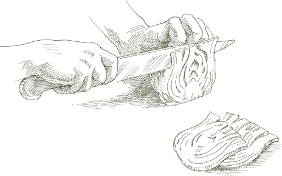

На 4–6 порций
2 крупных артишока ИЛИ 3–4 средних
½ лимона
2 столовые ложки нарезанного лука
3 столовые ложки оливкового масла
½ чайной ложки чеснока, очень мелко нарезанного
2 фунта (900 г) свежего горошка в стручках ИЛИ 1 упаковка (280 г) замороженного горошка, размороженного
1 столовая ложка нарезанной петрушки
Соль
Черный перец, свежемолотый
1. Очистите артишоки от всех жестких частей. Во время работы натирайте срезанный артишок лимоном, чтобы он не потемнел.
2. Разрежьте каждый очищенный артишок вдоль на 4 равные части. Удалите мягкие, закрученные листья с колючими кончиками у основания и отрежьте пушистую "сердцевину" под ними.
Отделите стебли, но не выбрасывайте их, так как они могут быть столь же вкусными, как и сердцевина, если их правильно очистить. Удалите их темно-зеленую корку, чтобы обнажить светлый и нежный сердцевину, затем разрежьте их пополам вдоль или, если они очень толстые, на 4 части.
Разрежьте части артишока вдоль на дольки толщиной около 1 дюйма (2.5 см) в самой широкой части и сбрызните лимонным соком все срезанные части, чтобы защитить их от потемнения.
3. Выберите кастрюлю с толстым дном или эмалированную чугунную кастрюлю, достаточно большую, чтобы вместить все ингредиенты, положите нарезанный лук и оливковое масло, включите средний огонь, готовьте и помешивайте лук, пока он не станет очень светло-золотистым, затем добавьте чеснок. Готовьте чеснок, пока он не станет светло-золотистым, затем добавьте дольки артишока, ⅓ чашки воды, отрегулируйте огонь, чтобы готовить на медленном огне, и плотно накройте кастрюлю.
4. Если используете свежий горох: Очистите его, и подготовьте некоторые стручки для приготовления, удалив их внутреннюю мембрану. Не обязательно использовать все или даже большинство стручков, но сделайте столько, сколько у вас хватит терпения. (Стручки значительно способствуют сладости гороха и всего блюда, но их использование является необязательной процедурой, которую вы можете пропустить, если предпочитаете.)
5. Когда артишоки готовились около 10 минут, добавьте очищенный горох и необязательные стручки, нарезанную петрушку, соль, перец и, если жидкости в кастрюле стало недостаточно, ¼ чашки воды. Тщательно перемешайте горох, чтобы он хорошо покрылся. Снова плотно накройте и продолжайте готовить, пока артишоки не станут очень мягкими в самой толстой части, когда их проколите вилкой. Попробуйте и исправьте по соли. Также попробуйте горох, чтобы убедиться, что он полностью приготовлен. Пока артишоки и горох готовятся, добавьте 2 или 3 столовые ложки воды, если вы обнаружите, что жидкости недостаточно.
Если используете замороженный горох: Добавьте размороженный горох на последнем этапе, когда артишоки уже мягкие или почти мягкие, тщательно перемешивая их и давая им готовиться с артишоками в течение 5 минут.
6. Когда оба овоща полностью приготовлены, если вы обнаружите, что соки в кастрюле слишком водянистые, откройте крышку, увеличьте огонь до высокого и быстро выпарите их.
Заметка заранее  Блюдо можно приготовить заранее в тот же день, когда оно будет подаваться. Не ставьте в холодильник, иначе его вкус изменится. Разогрейте осторожно в закрытой кастрюле с 1 столовой ложкой воды, если необходимо.
Блюдо можно приготовить заранее в тот же день, когда оно будет подаваться. Не ставьте в холодильник, иначе его вкус изменится. Разогрейте осторожно в закрытой кастрюле с 1 столовой ложкой воды, если необходимо.
На 6 порций
3 крупных глобусных артишока ИЛИ 5 или 6 среднего размера
½ лимона
4 крупных лука-порея, около 4.5 см в диаметре, ИЛИ 6 меньших
¼ чашки оливкового масла первого холодного отжима
Соль
Черный перец, свежемолотый
1. Нарежьте очищенные артишоки на дольки по 1 дюйму (2.5 см) и очистите стебли. В процессе работы натирайте нарезанные артишоки лимоном, чтобы они не потемнели.
2. Удалите корни лука-порея, все поврежденные листья и около 1 дюйма (2.5 см) от зеленых верхушек. Разрежьте лук-порей пополам вдоль, затем нарежьте его на кусочки длиной около 2–3 дюймов (5–7.5 см).
3. Выберите кастрюлю с толстым дном или эмалированную чугунную кастрюлю, достаточно большую, чтобы вместить все ингредиенты, положите в нее лук-порей, оливковое масло и достаточное количество воды, чтобы она поднялась на 1 дюйм (2.5 см) по бокам кастрюли. Включите средний огонь, плотно накройте крышкой и готовьте на медленном огне, пока лук-порей не станет мягким.
4. Добавьте дольки артишоков, соль, перец и, если необходимо, 2–3 столовые ложки воды. Снова накройте и готовьте, пока артишоки не станут очень мягкими в самой толстой части при прокалывании вилкой, около 30 минут или более, в зависимости от артишоков. Пока артишоки готовятся, добавьте 2–3 столовые ложки воды, если жидкости недостаточно. Когда они будут готовы, попробуйте и исправьте вкус. Если вы заметите, что соки в кастрюле слишком водянистые, откройте крышку, увеличьте огонь до сильного и быстро выпарите их.
Заметка заранее Заметка в конце Брализованных артишоков и горошка применима и здесь.
На 4–6 порций
2 крупных артишока
½ лимона
1 фунт (450 г) картофеля
⅓ чашки крупно нарезанного лука
¼ чашки оливкового масла первого холодного отжима
¼ чайной ложки очень мелко нарезанного чеснока
Соль
Черный перец, свежемолотый
1 столовая ложка нарезанной петрушки
1. Нарежьте очищенные артишоки на дольки по 1 дюйму (2.5 см) и очистите стебли. В процессе работы натирайте нарезанные артишоки лимоном, чтобы они не потемнели.
2. Очистите картофель, промойте его в холодной воде и нарежьте на небольшие дольки толщиной около ¾ дюйма (2 см) в самой широкой части.
3. Выберите кастрюлю с толстым дном или эмалированную чугунную кастрюлю, достаточно большую, чтобы вместить все ингредиенты, положите нарезанный лук и оливковое масло, включите средний огонь. Готовьте и помешивайте лук, пока он не станет прозрачным, но не подрумянится, затем добавьте чеснок. Готовьте чеснок, пока он не станет светло-золотистым, затем добавьте картофель, дольки артишока и стебли, соль, перец и петрушку, и готовьте достаточно долго, чтобы перевернуть все ингредиенты 2–3 раза.
4. Добавьте ¼ чашки воды, отрегулируйте огонь, чтобы готовить на медленном, но устойчивом кипении, и плотно накройте крышкой. Готовьте, пока картофель и артишоки не станут мягкими при прокалывании вилкой, примерно 40 минут, в основном в зависимости от картофеля. Во время готовки добавьте 2–3 столовые ложки воды, если вы заметите, что в кастрюле недостаточно жидкости. Попробуйте и исправьте вкус перед подачей.
Заранее Примечание в конце раздела о тушеных артишоках и горохе применимо и здесь.

FИЛИ ПРОСТО ШЕСТЬ НЕДЕЛ весной, между апрелем и маем, сицилийские повара находят овощи достаточно молодые, чтобы приготовить фриттедду. Молодость и свежесть — идеальные компоненты этого божественного блюда, свежесть только что собранных молодых артишоков, бобов фава и гороха. Я видел, как фриттедду готовили в Палермо, когда овощи были настолько нежными, что их готовили почти так же быстро, как и помешивали в кастрюле.
Если вы выращиваете свои собственные овощи или имеете доступ к хорошему фермерскому рынку, вы можете очень близко повторить нежный сицилийский вкус этого блюда. Но даже если вам придется полагаться на продукцию от обычного овощевода, ограничьте себя временем года, когда требуемые здесь овощи находятся в самом молодом состоянии, или примите компромиссы, предложенные ниже, и достаточно магии фриттедды проявится, чтобы это стоило вашего времени.
Аромат свежего дикого фенхеля является важной частью этой подготовки, как и многих других сицилийских блюд. Если эта трава недоступна, используйте свежий укроп или попросите вашего овощевода сохранить для вас листовые верхушки, которые он обычно срезает с финоккьо.
На 6 порций
3 средних ИЛИ 5 маленьких артишоков, очень свежих, без черных пятен или других discoloration
½ лимона
2 фунта (900 г) свежих, маленьких бобов фава в стручках ИЛИ ⅔ банки (около 425 г) «зеленых фаве», слитых
1 фунт (450 г) свежего маленького гороха в стручках ИЛИ ½ упаковки (около 280 г) качественного замороженного маленького гороха, размороженного
1 чашка (240 мл) свежего дикого фенхеля ИЛИ 1½ чашки (360 мл) листовых верхушек финоккьо ИЛИ ⅔ чашки (160 мл) свежего укропа
1½ чашки сладкого сырого лука, нарезанного очень тонко (см. примечание ниже)
⅓ чашки оливкового масла первого холодного отжима Соль
Примечание Используйте самый сладкий сорт лука, который доступен: Видалия, Мауи или Бермуда. Если ни один из этих сортов недоступен, замочите нарезанный желтый лук в нескольких сменах холодной воды на 30 минут, аккуратно сжимая лук в руке каждый раз, когда меняете воду; слейте перед использованием.
1. Нарежьте подготовленные артишоки на дольки по ½ дюйма и обрежьте, но не разрезайте их стебли. Пока работаете, натирайте нарезанные артишоки лимоном, чтобы они не потемнели.
2. Если используете свежие бобы фава, очистите их и выбросьте стручки.
3. Если используете свежий горох, очистите его и подготовьте некоторые стручки для приготовления, удалив их внутреннюю мембрану. Не обязательно использовать все или даже большинство стручков, но чем больше вы используете, тем слаще будет фриттедда.
4. Вымойте дикий фенхель, финоккьо или укроп в холодной воде, затем нарежьте крупными кусками.
5. Выберите кастрюлю с толстым дном или эмалированную чугунную кастрюлю, достаточно большую, чтобы вместить все ингредиенты, положите в нее нарезанный лук и оливковое масло, включите средний огонь и готовьте, пока лук не станет мягким и прозрачным.
6. Добавьте дикий фенхель, финоккьо или укроп, дольки артишоков и стебли, тщательно перемешайте, чтобы все хорошо покрыть, и плотно накройте кастрюлю. Через 5 минут проверьте артишоки. Если они в идеальном состоянии, они должны выглядеть влажными и блестящими, а масла и пары от лука и фенхеля должно быть достаточно для продолжения их приготовления. Но если они выглядят довольно сухими, добавьте 3 столовые ложки воды. Если вы сомневаетесь, добавьте ее в любом случае, это не повредит. Когда не проверяете кастрюлю, держите ее плотно закрытой.
7. Если используете свежие бобы фава и горох: Добавьте их, когда артишоки будут готовы примерно наполовину, примерно через 15 минут, если они очень молодые и свежие. Добавьте 2 или 3 столовые ложки воды, если сомневаетесь, что в кастрюле достаточно влаги для их приготовления. Перемешайте все ингредиенты, чтобы хорошо их покрыть.
Если используете свежие бобы фава и замороженный горох: Сначала положите бобы, готовьте 10 минут, если они очень маленькие, 15–20 минут, если крупнее, затем добавьте размороженный горох и готовьте еще 5 минут, пока и артишоки, и бобы фава не станут мягкими.
Если используете свежий горох и консервированные бобы фава: Когда артишоки будут готовы наполовину, добавьте горох и их обрезанные стручки. Готовьте, пока и горох, и артишоки не станут мягкими, добавляя 2 или 3 столовые ложки воды по мере необходимости, затем добавьте слитые консервированные «зеленые фаве» и готовьте еще 5 минут.
Если используете замороженный горох и консервированные бобы фава: Положите одновременно как размороженный горох, так и слитые бобы, когда артишоки только начали становиться мягкими при нажатии вилкой. Готовьте еще 5 минут.
8. Попробуйте и исправьте на соль перед подачей. Дайте фриттедде настояться несколько минут, позволяя ее вкусам раскрыться от тепла, перед тем как подать на стол, но не подавайте ее холодной. Если возможно, планируйте подавать ее сразу после приготовления, без подогрева.
ЗДЕСЬ ЕСТЬ один случай, когда не стоит быть слишком строгим в использовании замороженных овощей. Замороженные сердцевины артишока очень хорошо жарятся, и контраст между их мягким внутренним содержимым и хрустящей корочкой из яйца и панировочных сухарей весьма привлекателен. Хотя не стоит отказываться от свежих артишоков, если они очень молодые и нежные.
На 4–6 порций
3 средних артишока ИЛИ 1 упаковка (280 г) замороженных сердцевин артишока, размороженных
Если используете свежие артишоки: ½ лимона и 1 столовую ложку свежевыжатого лимонного сока
1 яйцо
1 чашка мелких, сухих, безвкусных панировочных сухарей, рассыпанных на тарелке
Оливковое масло
Соль
1. Если используете свежие артишоки: Нарежьте очищенные артишоки на дольки по 1 дюйму (2.5 см) и обрежьте и разрежьте их стебли. Во время работы натирайте нарезанные артишоки лимоном, чтобы они не потемнели.
Доведите 3 кварты (2.8 л) воды до кипения. Добавьте 1 столовую ложку лимонного сока вместе с артишоками и варите 5 минут или дольше после того, как вода снова закипит, пока артишоки не станут нежными, но все еще достаточно твердыми, чтобы оказывать некоторое сопротивление, когда их прокалывают в самой толстой части вилкой. Слейте воду, дайте остыть и обсушите.
Если используете замороженные артишоки: Когда разморозятся, если целые, разрежьте пополам и тщательно обсушите бумажными полотенцами.
2. Легко взбейте яйцо в небольшой миске или глубокой тарелке.
3. Обмакните артишоки в яйцо, позволяя излишкам стечь обратно в миску, затем обваляйте их в панировочных сухарях, чтобы покрыть со всех сторон.
4. Налейте в сковороду достаточно масла, чтобы оно поднималось на ¾ дюйма (2 см) по бокам, и включите средний огонь. Когда масло достаточно нагреется, чтобы образовать легкую дымку, аккуратно положите панированные артишоки в сковороду, готовьте их достаточно долго, чтобы образовалась корочка с одной стороны, затем переверните и поджарьте с другой стороны. Если они не помещаются в сковороду одновременно, жарьте их в два или более подходов, не overcrowding. Когда каждая партия готова, переложите ее с помощью шумовки или лопатки на решетку для остывания или на тарелку, выстланную бумажными полотенцами. Когда все будут готовы, посыпьте солью и подавайте немедленно.
Заметка заранее Рецепт можно завершить до этого момента за несколько часов до подачи, но если вы храните панированные овощи в холодильнике, достаньте их заранее, чтобы они полностью достигли комнатной температуры.
На 4 порции
4 крупных ИЛИ 6 средних артишоков
½ лимона
1 столовая ложка свежевыжатого лимонного сока
Форма для запекания, подходящая для подачи на стол
Сливочное масло для смазывания формы и выкладывания кусочков
Соль
½ чашки свеженатертого пармезана
1. Нарежьте подготовленные артишоки на дольки шириной 1 дюйм (2.5 см) и обрежьте и разрежьте их стебли. В процессе работы натирайте нарезанные артишоки лимоном, чтобы они не потемнели.
2. Разогрейте духовку до 190°C (375°F).
3. Доведите до кипения 3 кварты воды (около 2.8 л). Добавьте 1 столовую ложку лимонного сока вместе с артишоками и варите в течение 5 минут или более после повторного закипания, пока артишоки не станут мягкими, но все еще достаточно крепкими, чтобы оказывать сопротивление, когда их прокалывают в самой толстой части вилкой. Слейте воду и дайте остыть.
4. Нарежьте дольки артишоков очень тонкими продольными ломтиками.
5. Смажьте дно формы для запекания сливочным маслом и выложите слой ломтиков артишоков и стеблей. Посыпьте солью и натертым пармезаном, и выложите кусочки масла. Повторите процедуру, укладывая слои артишоков, пока все не будет использовано. Обильно посыпьте верхний слой натертым сыром и выложите кусочки масла.
6. Выпекайте в верхней части предварительно разогретой духовки в течение 15–20 минут, пока не образуется легкая корочка сверху. Дайте постоять несколько минут перед подачей.
В ЭТОМ ГРАТЕНЕ артишоки полностью приготовлены перед тем, как попасть в духовку с сырым нарезанным картофелем и пассерованным луком. Пока картофель готовится, тонкие ломтики артишоков становятся очень мягкими, отдавая часть своей текстуры, чтобы более широко распространить свой вкус.
На 6 порций
2 крупных артишока ИЛИ 4 среднего размера
1 лимон, разрезанный пополам
2 столовые ложки сливочного масла и немного больше для смазывания формы для запекания
1 чашка тонко нарезанного лука
Соль
3 средних картофелины, очищенные и нарезанные тонкими ломтиками
Форма для запекания, подходящая для подачи на стол
Черный перец, свежемолотый
½ чашки свеженатертого пармезана
1. Нарежьте подготовленные артишоки на дольки толщиной 1 дюйм (2.5 см) и очистите и разрежьте стебли. Используйте половину лимона, чтобы смочить срезанные части соком, пока работаете. Положите дольки артишоков и стебли в миску с достаточным количеством холодной воды, чтобы покрыть, и выжмите сок другой половины лимона в миску. Перемешайте и оставьте до дальнейшего использования.
2. Выберите сковороду, достаточно большую, чтобы вместить все ингредиенты, положите в нее 2 столовые ложки сливочного масла и лук, и включите средний огонь. Готовьте лук медленно, периодически помешивая, пока он не станет очень мягким и не приобретет глубокий золотистый цвет. Снимите с огня.
3. Слейте дольки артишоков и стебли, промойте их в холодной воде, чтобы удалить следы кислоты. Нарежьте дольки как можно тоньше. Положите ломтики и стебли в сковороду с луком, посыпьте солью, добавьте ½ чашки воды, включите средний огонь и накройте кастрюлю крышкой, оставив ее немного приоткрытой. Готовьте на медленном, периодическом кипении, время от времени переворачивая артишоки, пока они не станут мягкими при прокалывании вилкой, около 15 минут или более, в зависимости от их свежести.
4. Пока артишоки готовятся, разогрейте духовку до 200°C (400°F).
5. Когда артишоки будут готовы, положите нарезанный картофель в сковороду, переверните его 2–3 раза, чтобы хорошо покрыть, затем снимите с огня.
6. Перелейте содержимое сковороды в форму для запекания, предпочтительно выбирая такую, в которой ингредиенты, когда они все будут в ней, не поднимутся выше 4 см (1.5 дюйма) по бокам. Добавьте несколько щепоток перца и немного соли, и используйте обратную сторону ложки или лопатки, чтобы равномерно распределить смесь артишоков и картофеля. Выложите сверху кусочки масла и поместите форму на верхнюю полку разогретой духовки.
7. Через 15 минут достаньте блюдо из духовки, перемешайте его содержимое 2–3 раза, снова равномерно распределите и верните в духовку. Когда картофель станет мягким, примерно через 15 минут, достаньте сковороду, посыпьте верх тертым пармезаном и оставьте в духовке, пока сыр не расплавится и не образует легкую корочку. Дайте нагреву немного снизиться перед подачей на стол.
ТЕСТО ДЛЯ ТОРТЫ для этого овощного пирога необычно, потому что вместо яиц, которые обычно используются для приготовления итальянского слоеного теста, здесь используется рикатта. Оно очень легкое, и слово, которое лучше всего описывает его текстуру, действительно, слоеное.
Вкусная начинка состоит в основном из артишоков, которые нарезаны очень тонко и тушатся на подушке из моркови и лука. Она дополняется яйцами, рикаттой и пармезаном.
На 6 порций
ДЛЯ НАЧИНКИ
4 средних артишока
1 лимон, разрезанный пополам
3 столовые ложки оливкового масла
2 столовые ложки нарезанного лука
3 столовые ложки нарезанной моркови
1 столовая ложка нарезанной петрушки
Соль
Черный перец, свежемолотый
¾ чашки свежей рикатты
½ чашки свеженатертого сыра пармиджано-реджано
2 яйца
1. Подготовьте артишоки, удалив все жесткие части. В процессе работы натрите срезанный артишок половинкой лимона, выжимая несколько капель сока, чтобы он не потемнел. Разрежьте подготовленные артишоки пополам, чтобы удалить и выбросить волосистую сердцевину и колючие внутренние листья, затем нарежьте их вдоль на как можно более тонкие ломтики. Поместите в миску с достаточным количеством воды, чтобы покрыть, и соком другой половинки лимона.
2. Очистите стебли артишока от жесткой внешней кожицы и нарежьте их вдоль на очень тонкие ломтики. Добавьте их в миску с нарезанными артишоками.
3. Поместите оливковое масло, лук и морковь в сковороду и включите средний огонь. Готовьте и помешивайте лук, пока он не станет светло-золотистым. Затем добавьте петрушку, быстро перемешивая 2 или 3 раза.
4. Слейте артишоки, тщательно промойте их под холодной водой, чтобы смыть лимон, обсушите их на полотенце, затем добавьте в сковороду. Переверните их 2 или 3 раза, чтобы хорошо покрыть, добавьте соль и перец, снова переверните еще 2 или 3 раза, затем добавьте ½ чашки воды и накройте сковороду крышкой. Готовьте до мягкости, 5-15 минут, в зависимости от молодости и свежести артишоков. Если в процессе жидкость в сковороде станет недостаточной, добавьте 2 или 3 столовые ложки воды по мере необходимости. Когда артишоки будут готовы, в сковороде не должно остаться воды. Если она есть, снимите крышку, увеличьте огонь до максимума и быстро выпарите ее. Перелейте все содержимое сковороды в миску и дайте остыть полностью.
5. Когда остынет, добавьте рикорту и тертый пармезан.
6. Легко взбейте яйца в глубокой тарелке, затем влейте их в миску. Попробуйте и исправьте начинку по вкусу, добавив соль и перец.
ПРИГОТОВЛЕНИЕ ТЕСТА И ЗАВЕРШЕНИЕ ТОРТЫ
1½ чашки муки
8 столовых ложек (1 пачка) сливочного масла, размягченного до комнатной температуры
¾ чашки свежей рикорты
½ чайной ложки соли
Вощеная бумага ИЛИ кухонная пергаментная бумага
Форма для выпечки диаметром 20 см
Сливочное масло и мука для формы
1. Разогрейте духовку до 190°.
2. Смешайте муку, сливочное масло, рикорту и соль в миске, используя пальцы или вилку.
3. Выложите смесь на рабочую поверхность и вымесите в течение 5–6 минут, пока тесто не станет гладким. Разделите тесто на 2 неравные части, одна из которых в два раза больше другой.
4. Раскатайте большую часть теста в круглый пласт толщиной не более ⅓ дюйма (0.8 см). Чтобы упростить перенос теста в форму, раскатывайте его на слегка посыпанной мукой восковой бумаге или кухонном пергаменте.
5. Намажьте внутреннюю поверхность разъемной формы сливочным маслом, затем посыпьте мукой и переверните, слегка постучав о стол, чтобы стряхнуть лишнюю муку.
6. Поднимите восковую бумагу или кухонный пергамент с пластом теста и переверните его на форму, накрывая дно и позволяя тесту подняться по бокам. Снимите восковую бумагу или пергамент и разгладьте тесто, прижимая и выравнивая особенно крупные складки пальцами.
7. Вылейте начинку из артишоков в форму и выровняйте ее с помощью шпателя.
8. Раскатайте оставшуюся часть теста, используя тот же метод, что и ранее. Уложите его на начинку, полностью ее накрывая. Прижмите край верхнего листа теста к краю, который выложен в форме. Сделайте плотное соединение по всему периметру, загибая лишнее тесто к центру.
9. Поставьте на верхнюю полку разогретой духовки и выпекайте, пока верх не станет слегка золотистым, около 45 минут. Когда вы вынете его из духовки, отстегните пружину формы и снимите ободок. Дайте торте постоять несколько минут, прежде чем освободить ее от дна и переложить на сервировочное блюдо. Подавайте либо теплой, либо при комнатной температуре.

Неясность часто становится судьбой продуктов, которые начинают свою жизнь под запутанным названием. Этот прекрасный, но незаслуженно забытый овощ не из Иерусалима, он родом из Северной Америки; это не артишок, а съедобный корень разновидности подсолнечника. Подсолнечник на итальянском языке — girasole, что, очевидно, звучало как Иерусалим для неитальянских ушей. Еще более странно, что его итальянское название не имеет никакого отношения к girasole или подсолнечнику. Это топинамбур, название бразильской труппы, которая гастролировала по стране, по-видимому, в то же время, когда корень был представлен. Возможно, он наконец станет более известен англоговорящим как “sunchoke,” название, которое его производители решили придумать для него, и которое будет использоваться здесь впредь.
Как использовать Когда нарезаны очень тонко, сырые санчоки одновременно хрустящие и сочные, с ореховым вкусом, который особенно уместен в салате. При пассеровании или запекании их текстура представляет собой смесь крема и шелка, а их вкус отдаленно напоминает сердцевину артишока, но слаще, без горечи артишока. Тонкую кожицу можно оставить, когда их едят сырыми, но ее нужно удалить для приготовления, так как она становится жесткой.
Как купить Санчоки в сезоне с осени до ранней весны. Они в наилучшем состоянии, когда очень твердые; по мере потери свежести они становятся губчатыми.
На 6 порций
1½ фунта (680 г) санчоков Соль
¼ чашки оливкового масла первого холодного отжима
1 чайная ложка чеснока, очень мелко нарезанного
Чёрный перец, свежемолотый из мельницы
1 столовая ложка мелко нарезанной петрушки
1. Очистите топинамбур, используя небольшой нож для чистки или овощечистку с поворотным лезвием. Доведите до кипения 3 кварты (≈ 3 литра) воды, добавьте соль, затем опустите очищенный топинамбур, сначала большие куски, удерживая маленькие на несколько мгновений. Когда вода снова закипит, выньте топинамбур. Как только он остынет достаточно, чтобы с ним можно было работать, нарежьте его ломтиками толщиной ¼ дюйма (≈ 0.6 см) или меньше. Он должен оставаться довольно плотным.
2. Поместите оливковое масло и чеснок на сковороду и включите средний огонь. Готовьте, помешивая чеснок, пока он не станет очень светло-золотистым, затем добавьте нарезанный топинамбур, тщательно перемешивая, чтобы он хорошо покрылся. Добавьте соль, перец и нарезанную петрушку, и снова полностью переверните. Готовьте, пока топинамбур не станет очень мягким при прокалывании вилкой, переворачивая его время от времени во время готовки. Попробуйте и исправьте вкус, подавайте сразу.
На 4 порции
1 фунт (450 г) топинамбура
Соль
Запеканка, подходящая для подачи на стол
Сливочное масло для смазывания и выкладывания в запеканку
Чёрный перец, свежемолотый из мельницы
¼ чашки свеженатертого пармезана
1. Разогрейте духовку до 400°F (≈ 200°C).
2. Очистите топинамбур и опустите его в подсоленную, кипящую воду. Готовьте его, пока он не станет мягким, но не разварится при прокалывании вилкой. Через десять минут после того, как вода снова закипит, проверяйте его часто, так как он может быстро перейти от очень плотного состояния к очень мягкому. Слейте воду, и как только он остынет достаточно, чтобы с ним можно было работать, нарежьте его ломтиками толщиной ½ дюйма (≈ 1.25 см).
3. Смажьте дно запеканки сливочным маслом, затем выложите ломтики топинамбура, располагая их так, чтобы они немного перекрывали друг друга, как черепицу. Посыпьте солью, перцем и тертым пармезаном, выложите кусочки масла и поставьте форму на верхнюю полку разогретой духовки. Выпекайте, пока не начнет образовываться легкая золотистая корочка сверху. Дайте немного остыть перед подачей на стол.

На 6 порций
1½ фунта (≈ 680 г) топинамбура
¼ чашки оливкового масла первого холодного отжима
1 чашка лука, нарезанного очень мелко
½ чайной ложки нарезанного чеснока
2 столовые ложки нарезанной петрушки
⅔ чашки консервированных импортных итальянских сливов, нарезанных, с соком
Соль
Черный перец, свежемолотый
1. Очистите топинамбур ножом для чистки или овощечисткой с вращающимся лезвием, промойте его в холодной воде и нарежьте на кусочки толщиной около 1 дюйм (2.5 см).
2. Положите оливковое масло и лук в сковороду, включите средний огонь. Готовьте и помешивайте лук, пока он не станет глубокого золотистого цвета, затем добавьте чеснок. Быстро перемешайте, добавьте петрушку, быстро перемешайте 2 или 3 раза, затем добавьте помидоры с соком. Перемешайте, чтобы хорошо покрыть, и отрегулируйте огонь для равномерного томления.
3. Когда помидоры потушатся в течение 5 минут, добавьте нарезанный топинамбур, соль и перец, переверните топинамбур один или два раза, чтобы хорошо его покрыть, и отрегулируйте огонь для очень медленного, прерывистого кипения. Готовьте около 30–45 минут, периодически помешивая, пока топинамбур не станет очень мягким при нажатии вилкой.
Заметка заранее Блюдо можно приготовить заранее за несколько часов или даже на день. Не разогревайте более одного раза.
На 6 порций
1 фунт (450 г) топинамбура
8 пучков зеленого лука
3 столовые ложки сливочного масла
Соль
Черный перец, свежемолотый
1. Очистите топинамбуры от кожицы с помощью ножа для чистки или овощечистки, промойте их в холодной воде и тщательно обсушите бумажными полотенцами. Нарежьте их очень тонкими ломтиками, желательно не толще ¼ дюйма (0.6 см).
2. Удалите корешки зеленого лука и поврежденные листья, но не отрезайте зеленые верхушки. Промойте в холодной воде, обсушите и нарежьте каждый зеленый лук на 2 короткие части, разрезая пополам. Если некоторые имеют толстые луковицы, разрежьте их вдоль пополам.
3. Положите сливочное масло в сковороду и включите средний огонь. Когда сливочное масло растает и начнет пениться, добавьте зеленый лук, перемешайте его, чтобы он хорошо покрылся маслом, уменьшите огонь до среднего и добавьте ½ чашки (120 мл) воды. Готовьте, пока вся вода не испарится, периодически переворачивая зеленый лук.
4. Добавьте ломтики топинамбура, соль и перец, и тщательно перемешайте, чтобы они хорошо покрылись. Добавьте еще ½ чашки (120 мл) воды и готовьте на устойчивом, но легком кипении, пока вода полностью не испарится, периодически переворачивая зеленый лук и топинамбур. Проверяйте топинамбур вилкой во время готовки. Если он очень свежий, он может стать мягким до того, как вся вода испарится. В этом случае увеличьте огонь до высокого и быстро выпарите жидкость. Если, наоборот, вода испарилась, а он еще не совсем мягкий, добавьте 2–3 столовые ложки (30–45 мл) воды и продолжайте готовить. В большинстве случаев топинамбур будет готов в течение 20–25 минут. Попробуйте и исправьте вкус, подавайте сразу.

На 4 порции
1 фунт (450 г) топинамбура
Оливковое масло
Соль
1. Очистите топинамбуры от кожицы с помощью ножа для чистки или овощечистки и нарежьте их на максимально тонкие ломтики. Промойте их в нескольких сменах холодной воды, чтобы смыть остатки земли и часть крахмала. Тщательно обсушите бумажными полотенцами.
2. Налейте в сковороду достаточно масла, чтобы оно поднялось чуть больше чем на ¼ дюйма (0.6 см) по бокам, и включите высокий огонь. Когда масло нагреется, аккуратно положите столько ломтиков топинамбура, сколько поместится в сковороду, не перегружая ее. Когда они станут красивого румяного цвета с одной стороны, переверните их и поджарьте с другой стороны. Переложите их с помощью шумовки или лопатки на решетку для охлаждения или на поднос, выстланный бумажными полотенцами. Положите следующую партию и повторите процедуру, пока все топинамбуры не будут готовы. Посыпьте солью и подавайте сразу.
Как выбрать Первое, на что стоит обратить внимание, это кончик спаржи или бутон. Он должен быть плотно закрыт и прямым, а не открытым и вялым. Цвет зеленой спаржи должен быть свежим, ярким и без намека на желтизну. Белая спаржа должна иметь ясный, ровный, кремовый цвет. Стебель должен быть твердым, а общий вид — росистым. Хотя спаржа, как и почти все остальное, сейчас продается в течение большей части года, она свежайшая весной, с апреля до начала июня. Толстая спаржа не обязательно лучше, чем тонкая, но обычно стоит дороже. Если вы собираетесь нарезать спаржу для соуса к пасте, или ризотто, или фриттаты, вам определенно не нужно переплачивать за размер. Если вы подаете спаржу целиком, однако, более мясистый стебель может иногда быть более удовлетворительным.
Как хранить В идеале спаржа должна сразу попасть в кастрюлю после покупки, но могут пройти часы или даже день, в течение которого вы захотите сохранить ее как можно более свежей. Свяжите спаржу, если она рыхлая, и поставьте ее в контейнер с 1 или 2 дюймами (2.5–5 см) холодной воды. Вы можете хранить ее таким образом в прохладном месте, без холодильника, до одного дня или полутора.
Как подготовить к приготовлению Почти вся древесная часть внизу стебля может быть сделана съедобной, если спаржа правильно подготовлена. Начните с того, что отрежьте около 1 дюйма (2.5 см) от толстого конца. Если вы заметите, что конец стебля, который вы открыли, сухой и волокнистый, отрежьте немного больше, пока не дойдете до более влажной части. Чем моложе спаржа, тем меньше нужно обрезать снизу.
Хотя центр стебля сочный и нежный, более темные зеленые волокна, которые его окружают, таковыми не являются и должны быть удалены. Держите спаржу кончиком к себе и, используя небольшой острый нож, снимите жесткий, тонкий, внешний слой стебля, начиная от основания на глубину около 1/16 дюйма (0.16 см) и постепенно уменьшая глубину до нуля, поднимая лезвие к более узкой части стебля у основания бутона. Поверните стебель немного и повторите процедуру, пока не обрежете его со всех сторон. Затем удалите любые мелкие листья, растущие ниже кончика спаржи.
Замочите спаржу на 10 минут в тазу с холодной водой, затем промойте в 2 или 3 сменах воды.
Как готовить Выберите любую кастрюлю, в которую можно будет уложить нарезанную спаржу горизонтально. Наполните водой и доведите до кипения. Добавьте 1 столовую ложку соли на каждый фунт спаржи, и когда вода снова начнет быстро кипеть, положите спаржу. Накройте кастрюлю, чтобы ускорить возвращение воды к кипению. Когда это произойдет, вы можете снять крышку. Через 10 минут вы можете начать проверять спаржу, прокалывая самую толстую часть стебля вилкой. Она готова, когда легко прокалывается. (Если спаржа очень тонкая и исключительно свежая, это может занять на минуту-две меньше.) Сразу же слейте воду, когда она будет готова.

На 4 порции
2 фунта (900 г) свежей спаржи
Соль
Форма для запекания, подходящая для подачи на стол
Сливочное масло для смазывания и выкладывания в форме
⅔ чашки свеженатертого пармиджано-реджано сыра
1. Разогрейте духовку до 230°C (450°F).
2. Подготовьте и отварите спаржу.
3. Смажьте дно прямоугольной или овальной формы для запекания сливочным маслом. Уложите отцеженную, отваренную спаржу в форму, располагая их рядом друг с другом в частично перекрывающихся рядах, с тем, чтобы все бутоны были направлены в одну сторону. Кончики спаржи в верхнем ряду должны перекрывать срезы стеблей в ряду ниже. Посыпьте каждый ряд солью и тертым сыром, а затем выложите кусочки масла, прежде чем положить еще один ряд сверху.
4. Выпекайте на верхней полке разогретой духовки, пока не образуется легкая золотистая корочка сверху. Проверьте через 15 минут выпекания. После того как вы достанете из духовки, дайте настояться несколько минут перед подачей на стол.
На 4 порции
К ингредиентам предыдущего рецепта добавьте:
2 столовые ложки сливочного масла
4 яйца
Соль
Черный перец, свежемолотый
1. Приготовьте запеченные спаржи с пармезаном, как указано в рецепте выше.
2. Достаньте форму для запекания из духовки и разделите спаржу на 4 порции, положив каждую на теплую тарелку.
3. Положите сливочное масло на сковороду, включите средний огонь, и когда пена от масла начнет утихать, разбейте яйца в сковороду и посыпьте солью. Не кладите больше яиц за раз, чем поместится без наложения. Если сковорода не может вместить все яйца сразу, жарьте их в два или более подхода.
4. Положите жареное яйцо на каждую порцию спаржи, затем полейте соками из формы для запекания каждое яйцо. Посыпьте перцем и подавайте немедленно.
На 6 порций
18 толстых свежих стеблей спаржи
½ фунта итальянского fontina сыра, нарезанного тонкими ломтиками (см. примечание ниже)
6 крупных тонких ломтиков прошутто
2 столовые ложки сливочного масла, плюс немного для смазывания и выкладывания в форму для запекания
Форма для запекания, подходящая для подачи на стол
Примечание Если вы не можете найти настоящий импортный итальянский fontina, вместо того чтобы заменять его безвкусной имитацией fontina из других источников, используйте parmigiano-reggiano сыр, нарезанный тонкими длинными полосками. Если вы это сделаете, замените вареную несоленую ветчину на прошутто, так как и пармезан, и прошутто соленые, и их сочетание может сделать связки спаржи слишком солеными.
1. Обрежьте и отварите спаржу, готовя ее больше на твердой стороне, чем на мягкой.
2. Разогрейте духовку до 200°С (400°).
3. Отложите 12 ломтиков фонтины (или 12 длинных полосок Пармезана) и разделите оставшийся сыр на 6 более или менее равных кучек.
4. Раскройте ломтик панчетты (или вареной ветчины) и положите на него 3 спаржи. Между стеблями разместите весь сыр из одной из 6 равных кучек. Добавьте 1 чайную ложку сливочного масла, затем плотно заверните панчетту вокруг стеблей спаржи. Продолжайте так, пока не сделаете 6 кластеров спаржи и сыра, завернутых в панчетту или ветчину.

5. Выберите форму для запекания, которая вмещает все пучки без наложения. Легко намажьте дно формы сливочным маслом и положите в нее пучки спаржи. На каждый положите 2 перекрестных ломтика фонтины или полоски Пармезана, отложенные ранее. Легко выложите кусочки сливочного масла на каждый пучок и поставьте форму на верхнюю полку предварительно разогретой духовки. Запекайте около 20 минут, достаточно долго, чтобы сыр растаял и образовал слегка пятнистую корочку.
6. После того как вынете из духовки, дайте постоять несколько минут перед подачей. При подаче каждого пучка полейте его частью сока из формы для запекания и подайте хороший, хрустящий хлеб для обмакивания.

До тех пор, пока открыватели Америки не вернулись домой с бобами, а также с золотом и серебром, единственным известным в Европе бобом была фава, или широкий боб. Удивительно, что хотя его выращивают и потребляют уже почти 5000 лет, его популярность в Италии никогда не выходила за пределы юга и центра. Тосканцы выращивают их на акрах и едят их целыми ведрами, даже не готовя, обмакивая их сырыми в крупную соль и запивая пекорино, сыром из овечьего молока. Но на севере Италии большинство людей никогда их не пробовали и не имеют представления, что с ними делать.
Когда и как покупать Их сезон длится с апреля по июнь, но лучшие бобы – это самые ранние и молодые. Когда их очищают, они должны быть размером с бобы лима или немного больше. Более крупные фава жестче, суше и более крахмалистые. Ищите стручки, которые не слишком сильно выпирают от перезревших бобов.
Как готовить Когда готовите свежие бобы фава, лучший совет – делать, как римляне. Классическая римская подготовка, которую весной можно попробовать в каждой траттории города, имеет немного соперников среди великих блюд из бобов. Я никогда не проходила ни одной весны, не приготовив его хотя бы полдюжины раз, и ни одна еда, которую я могу подать на стол, не принимается так тепло. В Риме это блюдо известно как фаве аль гуанчале, потому что бобы готовятся с свиным щеками, гуанчале. В данном варианте панчетта – которая гораздо легче найти – заменяет свиные щеки с полным успехом.
На 4 порции
Панчетта в одном ломтике толщиной 1.25 см
1.5 килограмма неочищенных молодых свежих бобов фава
2 столовые ложки оливкового масла первого холодного отжима
2 столовые ложки мелко нарезанного лука
Черный перец, свежемолотый
Соль
1. Разверните панчетту и нарежьте ее на полоски шириной ¼ дюйма (0.6 см).
2. Очистите бобы, выбросив стручки. Промойте бобы фава в холодной воде.
3. Положите оливковое масло и лук в сковороду, включите средний огонь. Готовьте и помешивайте лук, пока он не станет прозрачным, затем добавьте полоски панчетты. Готовьте около 2–3 минут, затем добавьте бобы и перец, и перемешайте, чтобы хорошо их покрыть. Добавьте ⅓ чашки (80 мл) воды, отрегулируйте огонь, чтобы готовить на самом медленном кипении, и накройте сковороду крышкой. Если бобы очень молодые и свежие, они приготовятся за около 8 минут, но если они не в самом лучшем состоянии, это может занять 15 минут или даже дольше. Проверяйте их время от времени вилкой. Если жидкости станет недостаточно для приготовления, добавьте еще 3–4 столовые ложки (45–60 мл) воды. Когда бобы станут мягкими, добавьте соль, тщательно перемешайте и готовьте еще минуту или две. Если в сковороде останется вода, откройте крышку, увеличьте огонь до максимума и быстро выпарите ее. Подавайте немедленно, в сопровождении толстых ломтей хрустящего хлеба.
Весна и лето щедры на свои дары овощей, но ни один из них не так ценен и не так характерен для итальянского стола, как молодые зеленые бобы в их свежем виде. Когда в июньский день в Италии вы позволите себе вписаться в ритм итальянского обеда и поедите пасту, за которой, возможно, последуют скалоппини или курица или рыба, а затем на столе появится блюдо с еще теплыми отварными зелеными бобами, сверкающими от оливкового масла и лимонного сока, вы, возможно, подумаете, что ничего не может быть вкуснее.
Нет ничего волшебного в том, чтобы сделать простое блюдо из отварных бобов выглядящим и вкусным. Качество оливкового масла, конечно, имеет огромное значение. Но все начинается с бобов, как они выбираются и как они готовятся.
Как купить Хотя они сейчас доступны в течение всего года, те, что выращиваются местно весной и летом, все еще лучшие. Их цвет должен быть однородным зеленым, либо светлым, либо темным, но равномерным, без пятен или желтых участков. Их кожица должна выглядеть свежей, почти влажной, не тусклой. И бобы не должны быть смешанными, а все одного размера, желательно не слишком толстыми. Если возможно, возьмите боб из корзины и сломайте его: он должен трещать четко и хрустко.
Как готовить Бобы должны готовиться достаточно долго, чтобы развить округлый, ореховый, сладкий вкус: их не следует переваривать, но и не недоваривать. Когда они недоварены, вкус их не бобов, а сырого травяного вкуса. При варке бобов вы должны добавить соль в кипящую воду перед тем, как опустить в нее бобы, чтобы сохранить их цвет ярким зеленым. Этот принцип применим ко всем зеленым овощам, особенно шпинату и швейцарскому мангольду. Овощ не становится соленым, потому что практически вся соль остается растворенной в воде.

Варка 1 фунта зеленых бобов
• Оторвите оба конца бобов, затем замочите бобы в тазу с холодной водой на 10 минут.
• Доведите 4 кварты (3.8 л) воды до кипения. Добавьте 1 столовую ложку соли, что на мгновение замедлит кипение. Как только вода снова закипит, опустите в нее отцеженные зеленые бобы. Когда вода снова закипит, отрегулируйте огонь так, чтобы она кипела умеренно. Время приготовления будет варьироваться в зависимости от молодости и свежести бобов. Если они очень молодые и свежие, это может занять 6 или 7 минут; если нет, это может занять 10 или 12 минут или даже дольше. Начинайте пробовать бобы после 6 минут варки. Слейте, когда они будут твердыми, но нежными, когда они потеряют свой сырой, растительный вкус.
На 6 порций
1 фунт (450 г) свежих, хрустящих зеленых бобов
3 столовые ложки сливочного масла
¼ чашки свеженатертого пармиджано-реджано сыра
Соль
1. Удалите кончики, замочите, отварите и откиньте на дуршлаг зеленую фасоль, как описано выше.
2. Положите фасоль и сливочное масло в сковороду и включите средний огонь. Когда сливочное масло растает и начнет пениться, переверните фасоль, чтобы хорошо ее покрыть. Добавьте тертый сыр, тщательно перемешивая фасоль. Попробуйте фасоль и добавьте соль по вкусу. Переверните их еще раз-два, переложите на теплое блюдо и подавайте немедленно.
На 6 порций
1 фунт (450 г) свежей, молодой зеленой фасоли
3 или 4 средние моркови
Соль
¼ фунта (мортаделла ИЛИ отварная не копченая ветчина, нарезанная кубиками размером ¼ дюйма (0.6 см)
3 столовые ложки сливочного масла
1. Удалите кончики, замочите, отварите и откиньте на дуршлаг зеленую фасоль. Они будут готовиться дальше в сковороде, поэтому откиньте их, когда они будут довольно твердыми.
2. Очистите морковь, промойте ее в холодной воде и нарежьте палочками немного тоньше, чем фасоль.
3. Выберите сковороду для жарки, которая сможет вместить все ингредиенты, не перегружая их. Положите в нее фасоль, морковь, соль, нарезанную мортаделлу или ветчину и сливочное масло. Включите средний огонь и готовьте, часто переворачивая фасоль и морковь, чтобы хорошо их покрыть. Когда сливочное масло начнет пениться, накройте сковороду. Готовьте, пока морковь не станет слегка мягкой, проверяя через 5–6 минут и время от времени переворачивая их и фасоль. Попробуйте и добавьте соль по вкусу, подавайте немедленно.
НИГДЕ В ИТАЛИИ приготовление овощей не поднято на такую высоту, как на генуэзском побережье. Аромат и удовлетворительная глубина вкуса, которые характеризуют эту кухню, хорошо представлены в этом пикантном пироге, который сочетает зеленую фасоль с картофелем, майораном и пармезаном. Это блюдо подойдет для любого меню, как закуска, овощной гарнир, легкое летнее обеденное блюдо или как часть буфета.
На 6 порций
½ фунта (225 г) картофеля для варки
1 фунт (450 г) свежей зеленой фасоли
2 яйца
1 чашка (240 мл) свеженатертого пармиджано-реджано сыра
Соль
Черный перец, свежемолотый, 2 чайные ложки сушеного майорана, если свежий, 1 чайная ложка, если сушеный
Круглая форма для выпечки диаметром 9 дюймов (23 см)
Оливковое масло первого холодного отжима
Невкусные панировочные сухари, слегка поджаренные
1. Вымойте картофель, положите его в кастрюлю с достаточным количеством холодной воды, чтобы он был полностью покрыт, и доведите до кипения.
2. Подготовьте, замочите, отварите и слейте зеленую фасоль. Она будет готовиться еще больше в духовке, поэтому слейте ее, когда она будет довольно упругой.
3. Измельчите фасоль очень мелко, но не до состояния пюре, в кухонном комбайне или пропустите через самые крупные отверстия мясорубки и положите в миску.
4. Разогрейте духовку до 175°C (350°F).
5. Слейте картофель, когда он станет мягким, проверяя его вилкой, очистите его и протрите через мясорубку или картофельную прессу в миску с фасолью. Не используйте кухонный комбайн, так как он делает картофель клейким.
6. Разбейте яйца в миску, добавьте тертый пармезан, соль, несколько щепоток перца и майоран. Тщательно перемешайте, чтобы все ингредиенты равномерно соединились.
7. Легко смажьте форму для выпечки оливковым маслом. Посыпьте панировочными сухарями всю внутреннюю поверхность формы, затем переверните форму вверх дном и постучите по столу, чтобы выбить лишние сухари.
8. Выложите смесь фасоли и картофеля в форму, равномерно распределяя и выравнивая с помощью лопатки. Посыпьте сверху панировочными сухарями и равномерно сбрызните оливковым маслом. Поместите в верхнюю треть разогретой духовки и выпекайте в течение 1 часа. Дайте постоять несколько минут, затем проведите лезвием ножа по краям пирога, чтобы отделить его от формы, переверните на тарелку, затем снова на другую тарелку. Подавайте теплым или при комнатной температуре.
Заметка заранее Вы можете подготовить рецепт за несколько часов до подачи. Не refrigerate. Завершите и подайте в тот же день, когда начали.
На 4–6 порций
1 фунт (450 г) свежей зеленой фасоли
1 сладкий желтый болгарский перец
3 столовые ложки оливкового масла первого холодного отжима
1 средняя луковица, нарезанная очень тонко
⅔ чашки консервированных импортных итальянских сливовых помидоров, крупно нарезанных, с соком, ИЛИ свежие, спелые помидоры, очищенные и нарезанные
Соль
Нарезанный острый красный перец по вкусу
1. Отломите оба конца фасоли, замочите их в тазу с холодной водой на 10 минут, затем слейте и отложите в сторону.
2. Вымойте перец в холодной воде, разрежьте его вдоль по складкам, удалите семена и мякоть, очистите его сырым овощечисткой. Нарежьте его длинными полосками шириной менее 1.5 см.
3. Положите оливковое масло и лук в сковороду, включите средний огонь и готовьте лук, помешивая, пока он не станет прозрачным. Добавьте полоски перца и нарезанные помидоры с соком. Перемешайте все ингредиенты, чтобы хорошо их покрыть, и отрегулируйте огонь, чтобы готовить на медленном, но устойчивом кипении около 20 минут, пока масло не отделится от помидоров.
4. Добавьте сырую зеленую фасоль, переверните ее 2 или 3 раза, чтобы хорошо покрыть, добавьте ⅓ чашки воды или меньше, если вы используете свежие помидоры, которые оказались водянистыми, соль и острый перец. Накройте и готовьте на медленном огне, пока фасоль не станет мягкой, 20–30 минут, в зависимости от молодости и свежести фасоли. Если жидкости для готовки становится недостаточно, добавьте 1 или 2 столовые ложки воды по мере необходимости. Когда фасоль будет готова, если сок в сковороде водянистый, снимите крышку, увеличьте огонь до максимума и быстро уварите. Попробуйте и исправьте по соли и острому перцу, и подавайте сразу.
Заранее заметка Блюдо можно приготовить заранее за несколько часов и осторожно разогреть перед подачей. Не refrigerate.

Пастиччо может означать две вещи в итальянском языке. В повседневной жизни это означает «беспорядок», например, «Как я вообще попал в этот пастиччо?». Однако, когда оно создается намеренно поваром, это смесь сыра и овощей, мяса или вареной пасты, связанная яйцами или бешамелем, или тем и другим. Иногда оно запекается в тесте, иногда нет. Приведенное ниже можно сделать в корке, но оно не в ней, и я думаю, что так оно легче и лучше.
На 6 порций
1 фунт (450 г) свежей зеленой фасоли
3 столовые ложки сливочного масла
Соль
Соус бешамель, приготовленный с использованием 1¼ чашки молока, 2 столовых ложек сливочного масла, 2 столовых ложек муки и ⅛ чайной ложки соли
3 яйца
3 столовые ложки свеженатертого сыра пармиджано-реджано
Целый мускатный орех
Форма для суфле на 6–8 чашек
½ чашки несладких панировочных сухарей, слегка поджаренных
1. Отломите оба конца фасоли, замочите их в тазу с холодной водой на 10 минут, слейте воду и нарежьте на кусочки длиной около 1 дюйма (2.5 см).
2. Выберите сковороду, которая может вместить всю фасоль плотно, но без наложения. Положите 2 столовые ложки сливочного масла, зеленую фасоль, 2 или 3 щепотки соли, достаточно воды, чтобы покрыть, и включите средний огонь. Готовьте, перемешивая фасоль время от времени, пока вся вода не испарится. Продолжайте готовить еще минуту или две, перемешивая фасоль в масле, затем снимите с огня.
3. Разогрейте духовку до 190°C (375°F).
4. Приготовьте соус бешамель, готовя его до средней густоты.
5. Легко взбейте яйца в миске и добавьте натертый пармезан и небольшую терку мускатного ореха — около ⅛ чайной ложки. Добавьте зеленую фасоль и бешамель, тщательно перемешивая, чтобы получить однородную смесь всех ингредиентов.
6. Намажьте внутреннюю часть формы для суфле оставшейся столовой ложкой сливочного масла и посыпьте достаточным количеством панировочных сухарей, чтобы покрыть дно и стенки. Переверните форму вверх дном и резко постучите по столу, чтобы стряхнуть лишние крошки. Вылейте содержимое миски в форму.
7. Поместите форму на верхнюю полку разогретой духовки и запекайте, пока не образуется легкая корочка сверху, около 45 минут.
8. Чтобы вынуть, проведите ножом вдоль стороны пастиччо, пока оно горячее, освобождая его от блюда по кругу. Дайте ему постоять несколько минут, затем накройте форму обеденной тарелкой, перевернутой дном вверх, крепко держите тарелку и форму вместе с помощью полотенца и переверните форму вверх дном. Пастиччо должно легко выскользнуть на тарелку, с максимум небольшим встряхиванием. Теперь вам нужно перевернуть его на другую тарелку. Поместите пастиччо между двумя тарелками и переверните. Дайте постоять несколько минут перед подачей на стол.

Мы привыкли видеть брокколи на рынке круглый год, но у него есть естественный сезон, с конца осени до зимы, когда он в наилучшем состоянии. При покупке обращайте внимание на соцветия или бутоны: они должны быть плотно закрыты, а их глубокий сине-зеленый или пурпурный цвет не должен иметь намека на желтизну. Самая мясистая и вкусная часть овоща — это его стебель, который нужно лишь очистить от жесткой внешней кожицы, чтобы он стал вполне съедобным. Листья также отличные, с вкусом, похожим на капусту, и в Италии, где брокколи поступает на рынок свежесобранным и окруженным листьями, они очень ценятся. К сожалению, они также быстро портятся, и в Северной Америке упаковщики их срезают. Если вы выращиваете брокколи сами, попробуйте листья в овощном или бобовом супе.
ТЕХНИКА, иллюстрируемая этим рецептом — пассерование бланшированных зеленых овощей в оливковом масле и чесноке — аналогична той, что используется для шпината и швейцарского мангольда, и это один из самых вкусных способов приготовления брокколи.
На 6 порций
1 пучок свежей брокколи (примерно 450–680 г)
Соль
¼ чашки оливкового масла первого холодного отжима
2 чайные ложки чеснока, очень мелко нарезанного
2 столовые ложки нарезанной петрушки
1. Отрежьте примерно 1–2 см от нижнего конца стебля. Используйте острый нож, чтобы срезать жесткую темно-зеленую кожицу, окружающую нежное ядро основного стебля и боковые ветви. Углубитесь там, где стебель шире, потому что кожа там толще. Разрежьте более крупные стебли пополам или, если они очень большие, на четыре части, не отделяя соцветия. Промойте в 3 или 4 полных сменах холодной воды.
2. Доведите 4 кварты воды до быстрого кипения. Добавьте 1 столовую ложку соли и, когда вода снова закипит, опустите брокколи. Отрегулируйте огонь, чтобы поддерживать умеренное кипение, и готовьте, пока стебель брокколи не будет прокалываться вилкой, около 5 минут, в зависимости от молодости и свежести овоща. Сразу же слейте воду, когда будет готово.
3. Выберите сковороду или сковороду, которая может вместить всю брокколи, не перегружая ее слишком плотно. Вложите оливковое масло и чеснок, и включите средний огонь. Готовьте и помешивайте чеснок, пока он не станет светло-золотистым, затем добавьте брокколи, соль и нарезанную петрушку. Переверните кусочки овощей 2 или 3 раза, чтобы они полностью покрылись. Готовьте около 2 минут, затем переложите содержимое сковороды на теплую тарелку и подавайте сразу.
Заранее подготовьте Подготовьте брокколи до этого момента за несколько часов до подачи в тот же день, но не refrigerate.
На 6 порций
1 пучок свежего брокколи, обрезанный, вымытый, отваренный и отцеженный, как описано выше
3 столовые ложки сливочного масла
Соль
½ чашки свеженатертого parmigiano-reggiano сыра
Выберите сковороду или сковороду для жарки, которая вмещает все кусочки брокколи, не плотно их прижимая, положите сливочное масло, включите средний огонь, и когда пена от масла начнет утихать, добавьте отваренное, отцеженное брокколи и соль. Переверните брокколи полностью 2–3 раза и готовьте около 2 минут, затем добавьте тертый пармезан. Переверните брокколи снова, затем переложите содержимое сковороды на теплую тарелку и подавайте сразу.
Только соцветия используются здесь, потому что они лучше всего подходят для жарки. Однако стебли слишком хороши, чтобы их выбрасывать; после обрезки используйте их в вареном салате, овощном супе или пассируйте их с чесноком и оливковым маслом.
На 6 порций
1 средний пучок свежего брокколи (около 1 фунта (450 г))
Соль
2 яйца
1 чашка мелкой, сухой, безвкусной панировочной крошки, выложенной на тарелке
Оливковое масло
Примечание Тесто, используемое здесь, состоит из яиц и панировочных крошек. Другой отличный вариант теста для соцветий — это pastella, тесто из муки и воды, используемое для жареных цукини.
1. Отрежьте соцветия там, где их стебли соединяются со стеблем. Отложите стебель в сторону, обрезав его жесткую внешнюю оболочку, и используйте его в другом блюде, как предложено в вводных замечаниях выше.
2. Вымойте соцветия в 2–3 сменах холодной воды. Доведите 2 кварты воды до быстрого кипения, добавьте большую щепотку соли, и как только вода снова закипит, опустите в нее соцветия. Время от времени погружайте любую часть соцветия, которая всплывает над уровнем воды, чтобы она не пожелтела. Когда вода снова закипит, достаньте соцветия с помощью шумовки и отложите в сторону, чтобы они остыли. Когда они остынут, нарежьте более крупные соцветия вдоль на кусочки толщиной около 1 дюйм (2.5 см). Постарайтесь, чтобы все кусочки были более-менее одинакового размера, чтобы их можно было жарить равномерно.
3. Разбейте яйца в суповую тарелку и слегка взбейте их вилкой.
4. Обмакните брокколи, по одному кусочку, в взбитое яйцо, позволяя избыточному яйцу стекать обратно на тарелку, затем обваляйте в панировочных сухарях, поворачивая, чтобы покрыть со всех сторон, и прижимая кончиками пальцев, чтобы панировка плотно прилипла. Выложите все обмакнутые и обвалянные кусочки на тарелку, пока не будете готовы их жарить.
5. Налейте в сковороду или жаровню достаточно оливкового масла, чтобы оно поднялось на ½ дюйма (1.25 см) по бокам, и включите средний огонь. Когда масло станет очень горячим, аккуратно опустите столько кусочков соцветий брокколи, сколько поместится за один раз, не overcrowding сковороду. Когда они образуют красивую золотистую корочку с одной стороны, переверните их и обжарьте с другой стороны. Переложите их на решетку для охлаждения, чтобы стечь, или на тарелку, выстланную бумажными полотенцами. Приготовьте еще одну партию и повторите вышеуказанную процедуру, пока все кусочки брокколи не будут готовы. Щедро посыпьте солью и подавайте сразу.

Любой сорт КАПУСТЫ — савойская капуста, красная капуста или обычная светло-зеленая капуста — хорошо подходит для этого рецепта. Она нарезается очень мелко и готовится очень медленно в парах от своей же влаги, смешанной с оливковым маслом и небольшим количеством уксуса. Венецианское слово для этого метода — sofegao, или тушеная.
На 6 порций
2 фунта (900 г) зеленой, красной или савойской капусты
½ чашки (120 мл) нарезанного лука
½ чашки (120 мл) оливкового масла первого холодного отжима
1 столовая ложка (15 мл) нарезанного чеснока
Соль
Черный перец, свежемолотый
1 столовая ложка (15 мл) винного уксуса
1. Отделите и выбросьте первые несколько наружных листьев капусты. Оставшуюся головку листьев нужно нарезать очень мелко. Если вы собираетесь делать это вручную, нарежьте листья на тонкие полоски, срезая их с целой головки. Поворачивайте головку после того, как нарежете часть, пока постепенно не обнажите весь стержень, который нужно выбросить. Если вы хотите использовать кухонный комбайн, нарежьте листья от стержня по частям, выбросьте стержень и пропустите листья через терку.
2. Положите лук и оливковое масло в большую сковороду для пассерования и включите средний огонь. Готовьте и помешивайте лук, пока он не станет глубокого золотистого цвета, затем добавьте чеснок. Когда вы приготовите чеснок до очень светлого золотистого цвета, добавьте нарезанную капусту. Переверните капусту 2 или 3 раза, чтобы хорошо ее покрыть, и готовьте, пока она не станет вялой.
3. Добавьте соль, перец и уксус. Переверните капусту один раз полностью, уменьшите огонь до минимума и плотно накройте сковороду. Готовьте не менее 1½ часов или до тех пор, пока она не станет очень мягкой, периодически переворачивая. Если во время приготовления жидкости в сковороде станет недостаточно, добавьте 2 столовые ложки (30 мл) воды по мере необходимости. Когда будет готово, попробуйте и исправьте вкус солью и перцем. Дайте немного постоять без огня перед подачей.
Я НЕ ЗНАЮ ни одного другого способа приготовления в итальянской кухне, или в других кухнях, который был бы более успешным в раскрытии богатого вкуса, запертого внутри моркови. Это достигается медленным приготовлением моркови с минимальным количеством жидкости, необходимой для поддержания процесса готовки, так что они полностью сводятся к своим основным элементам вкуса. Когда они будут готовы, их быстро обжаривают на огне с тертым пармезаном.
На 6 порций
1½ фунта (675 г) моркови
4 столовые ложки сливочного масла (½ пачки)
Соль
¼ чайной ложки сахара
3 столовые ложки свеженатертого пармезана
1. Очистите морковь, промойте ее в холодной воде и нарежьте на диски толщиной ⅜ дюйма (1 см). Тонкие заостренные концы можно нарезать толще. Выберите сковороду, которая может вместить морковные кружки в один плоский слой, без перекрытия. Положите в сковороду морковь и сливочное масло, добавьте достаточно воды, чтобы она поднялась на ¼ дюйма (0.6 см) по бокам. Если у вас нет одной сковороды достаточного размера, используйте две меньшие, разделив морковь и сливочное масло поровну между ними. Включите средний огонь. Не накрывайте сковороду.
2. Готовьте, пока вода не испарится, затем добавьте соль и ¼ чайной ложки сахара. Продолжайте готовить, добавляя 2-3 столовых ложек воды по мере необходимости. Ваша цель — получить хорошо подрумяненные, сморщенные диски моркови, с концентрированным вкусом и текстурой. Это займет 1-1½ часов, в течение которых вам нужно будет следить за ними, даже когда вы занимаетесь другими делами на кухне. Прекратите добавлять воду, когда они начнут достигать сморщенного, подрумяненного состояния, потому что в конце не должно остаться жидкости. Через 30 минут или чуть больше морковь уменьшится в объеме так, что, если вы использовали две сковороды, вы сможете объединить их в одну.
3. Когда морковь будет готова — она должна быть очень нежной — добавьте тертый пармезан, переверните морковь один или два раза, переложите на теплую тарелку и подавайте немедленно.
Заметка о приготовлении заранее Морковь можно полностью подготовить заранее, кроме пармезана, который вы добавите только при разогреве, незадолго до подачи.

На 4 порции
1 фунт (450 г) молодых морковок
3 столовые ложки оливкового масла
1 чайная ложка нарезанного чеснока
2 столовые ложки нарезанной петрушки
Соль
Чёрный перец, свежемолотый из мельницы
2 столовые ложки каперсов, замоченных и промытых, если упакованы в соль, и отцеженных, если в уксусе
1. Очистите морковь и промойте её в холодной воде. Она должна быть не толще вашего мизинца. Если она не такого размера изначально, нарежьте её вдоль пополам или на четвертинки, если необходимо.
2. Выберите сковороду для пассерования, которая позже сможет вместить всю морковь свободно. Влейте оливковое масло и добавьте чеснок, включите средний огонь. Готовьте и помешивайте чеснок, пока он не станет светло-золотистым, затем добавьте морковь и петрушку. Перемешайте морковь один-два раза, чтобы хорошо её покрыть, затем добавьте ¼ чашки воды. Когда вода полностью испарится, добавьте ещё ¼ чашки. Продолжайте добавлять воду в таком темпе, когда она испарится, пока морковь не будет готова. Она должна быть мягкой, но упругой, когда её проткнут вилкой. Проверяйте время от времени. В зависимости от свежести моркови, это займет около 20–30 минут. Когда морковь будет готова, в сковороде не должно остаться воды. Если она всё ещё есть, быстро выпарите её и дайте моркови слегка подрумяниться.
3. Добавьте перец и каперсы, и перемешайте морковь один-два раза. Готовьте ещё минуту-две, затем попробуйте и исправьте по вкусу, снова перемешайте, переложите на тёплую тарелку и подавайте немедленно.
Как выбрать Голова цветной капусты должна быть очень твёрдой, с листьями, которые свежие, хрустящие и без повреждений. Соцветия должны быть компактными и как можно более белыми. Если они желтоватые или с пятнами, лучше поискать другую или обойтись без неё.
• Отделите и выбросьте большую часть листьев, кроме небольших, нежных внутренних, которые очень приятно есть, если вы подаете цветную капусту как вареный салат. Сделайте глубокий крестообразный надрез в корневой части.
• Доведите 4–5 кварты воды до быстрого кипения. Чем больше воды вы используете, тем слаще будет вкус цветной капусты и тем быстрее она приготовится. Положите цветную капусту, и когда вода снова закипит, отрегулируйте огонь, чтобы готовить на умеренном кипении.
• Готовьте, не накрывая крышкой, пока цветная капуста не станет очень мягкой при прокалывании вилкой, 20 минут или более, в зависимости от свежести и размера головы. Сразу отцеживайте, когда будет готово.
Заметка на будущее Если вы не подаете вареную цветную капусту тёплой как салат, а планируете использовать её в запеканке или для жарки, вы можете приготовить её за 1 день до этого.
На 6 порций
1 средняя голова цветной капусты, около 2 фунтов (900 г)
Форма для запекания, которую можно подавать на стол
Сливочное масло для смазывания и выкладывания в форму для запекания
Соль
⅔ чашки свеженатертого parmigiano-reggiano сыра
1. Разогрейте духовку до 200°C (400°F).
2. Отварите и слейте цветную капусту, как описано. Когда она остынет достаточно, чтобы с ней можно было работать, разделите головку на отдельные соцветия.
3. Выберите форму для запекания, которая сможет плотно разместить соцветия. Смажьте дно сливочным маслом и уложите соцветия так, чтобы они слегка перекрывали друг друга, как черепица. Посыпьте солью и тертым пармезаном, и щедро выложите кусочки масла сверху. Запекайте на верхней полке разогретой духовки, пока не образуется легкая корочка сверху, около 15–20 минут. После того как вы вынете из духовки, дайте цветной капусте немного отдохнуть перед подачей на стол.
На 6 порций
1 средняя головка цветной капусты, около 900 г (2 фунта)
Соль
Соус бешамель, приготовленный с использованием 2 чашек молока, 4 столовых ложек (½ пачки) сливочного масла, 3 столовых ложек муки и ¼ чайной ложки соли
¾ чашки свеженатертого parmigiano-reggiano сыра
Целый мускатный орех
Форма для запекания, которую можно подавать на стол
Сливочное масло для смазывания и выкладывания в форму для запекания
1. Отварите и слейте цветную капусту, но так как запекание с бешамелем позже сделает ее мягче, готовьте только 10 минут после того, как вода снова закипит. Отделите соцветия и нарежьте их на кусочки размером около 1.25 см (½ дюйма) толщиной. Положите их в миску и перемешайте с небольшим количеством соли.
2. Разогрейте духовку до 200°C (400°F).
3. Приготовьте соус бешамель как описано. Когда он достигнет средней густоты, снимите его с огня и добавьте все, кроме 3 столовых ложек тертого пармезана и немного тертого мускатного ореха — около ⅛ чайной ложки.
4. Добавьте бешамель в миску с цветной капустой и аккуратно вмешайте, хорошо покрывая соусом соцветия.
5. Смазать дно формы для запекания сливочным маслом. Положите цветную капусту и весь бешамель из миски. Форма должна вмещать кусочки цветной капусты в слой не глубже 1½ дюйма (3.8 см). Посыпьте сверху оставшимися 3 столовыми ложками тертого пармезана и слегка выложите кусочки масла. Запекайте на верхней полке предварительно разогретой духовки, пока не образуется легкая корочка сверху, около 15–20 минут. После того как вынете из духовки, дайте цветной капусте немного постоять перед подачей.
На 6 и более порций
1 средняя головка цветной капусты, около 2 фунтов (900 г)
2 яйца
1 чашка панировочных сухарей без добавок, слегка поджаренных, выложенных на тарелку
Оливковое масло
Соль
1. Отварите и слейте цветную капусту. Когда она остынет достаточно, чтобы с ней можно было работать, отделите соцветия от головки и нарежьте их дольками толщиной около 1 дюйма (2.5 см) в самой широкой части.
2. Разбейте яйца в небольшую миску и слегка взбейте их.
3. Обмакните дольки цветной капусты в яйцо, позволяя излишкам яйца стекать обратно в миску, затем обваляйте их в панировочных сухарях, покрывая со всех сторон.
4. Налейте в сковороду достаточно масла, чтобы оно поднялось на ½ дюйма (1.25 см) по бокам, включите сильный огонь, и когда масло станет очень горячим, аккуратно положите столько кусочков цветной капусты, сколько поместится в сковороду, не overcrowding. Когда на одной стороне образуется красивая золотистая корочка, переверните их и обжарьте с другой стороны. Перенесите с помощью шумовки или лопатки на решетку для охлаждения, чтобы стечь, или на поднос, выложенный бумажными полотенцами. Если остались еще кусочки цветной капусты для жарки, повторите процедуру. Когда все будут готовы, посыпьте солью и подавайте немедленно.
Сыр ПАРМЕДЖАН parmigiano-reggiano делает великолепные кляры для жарки, так как он является идеальным связывающим агентом, плавится, не становясь жидким, тягучим или резиновым. И, конечно, он также придает свой уникальный вкус. Пухлая, нежная корочка, которую производит этот кляр, идеальна для таких овощных кусочков, как цветная капуста. Если вам понравится, попробуйте его с предварительно отваренным брокколи или финоккио.
На 6 и более порций
1 головка молодого цветной капусты, 2 фунта (900 г) или меньше
Соль
½ чашки теплой воды
⅓ чашки муки
⅓ чашки свеженатертого parmigiano-reggiano сыра
1 яйцо
Оливковое масло
1. Отварите и слейте цветную капусту. Когда она остынет достаточно, чтобы с ней можно было работать, отделите соцветия от головки у основания стеблей, разделите на отдельные соцветия и разрежьте каждое из них вдоль пополам. Легко посыпьте солью.
2. Поместите теплую воду в миску и постепенно добавляйте муку, просеивая ее через сито, а не через мукомолку. Взбивайте смесь вилкой, пока добавляете муку. Добавьте тертый пармезан и щепотку соли, хорошо перемешайте.
3. Вбейте яйцо в глубокую суповую тарелку, слегка взбейте его вилкой, затем тщательно смешайте с мукой и смесью пармезана.
4. Налейте в сковороду достаточно оливкового масла, чтобы оно поднялось на ¼ дюйма (0.6 см) по бокам, и включите сильный огонь. Когда капля теста, брошенная в сковороду, затвердевает и мгновенно всплывает на поверхность, масло достаточно горячее для жарки.
5. Обмакните 2 или 3 соцветия в тесто, позволяя излишкам теста стекать обратно в миску, когда вы их поднимаете, и аккуратно положите их в сковороду. Добавьте еще несколько покрытых тестом кусочков в сковороду, но не кладите слишком много сразу, иначе температура масла упадет.
6. Когда цветная капуста образует красивую золотистую корочку с одной стороны, переверните ее и обжарьте с другой стороны. Переложите с помощью шумовки или лопатки на решетку для охлаждения, чтобы стекло масло, или на поднос, выстланный бумажными полотенцами. Когда в сковороде освободится место, добавьте еще кусочки цветной капусты. Когда все будет готово, посыпьте солью и подавайте сразу.

НЕСМО НА ПОСЛЕДОВАТЕЛЬНОСТЬ кулинарных процедур — сначала сельдерей бланшируется, чтобы зафиксировать его цвет; затем он обжаривается с луком и панчеттой, чтобы создать базу вкуса; после этого он тушится с бульоном, чтобы стать мягким; и, наконец, запекается с тертым пармезаном для придания пикантного вкуса — это не очень сложное блюдо для приготовления. Вы должны найти средства полностью оправданными благодаря просто восхитительному результату.
На 6 порций
2 больших пучка хрустящего, свежего сельдерея
3 столовые ложки мелко нарезанного лука
2 столовые ложки сливочного масла
¼ чашки нарезанной панчетты ИЛИ прошутто
Соль
Черный перец, свежемолотый
2 чашки Основного домашнего мясного бульона ИЛИ ½ чашки консервированного говяжьего бульона, разбавленного 1½ чашками воды
Форма для запекания, подходящая для подачи на стол
1 чашка свеженатертого пармиджано-реджано сыра
1. Отрежьте листовые верхушки сельдерея и отделите все стебли от основания. Сохраните сердцевины для салата или для макания в Пинзимонио. Используйте овощечистку с поворотным лезвием, чтобы удалить большинство волокон, и нарежьте стебли на кусочки длиной около 7.5 см.
2. Доведите 2–3 кварты воды до быстрого кипения, опустите в нее сельдерей, и через 1 минуту после того, как вода снова закипит, слейте и отложите в сторону.
3. Разогрейте духовку до 200°С.
4. Положите лук и сливочное масло в кастрюлю и включите средний огонь. Готовьте и помешивайте лук, пока он не станет прозрачным, затем добавьте нарезанную панчетту или прошутто. Перемешайте, чтобы хорошо покрыть, готовьте 1 минуту, затем добавьте сельдерей, соль и перец, перемешайте сельдерей, чтобы он хорошо покрылся, и готовьте около 5 минут, периодически помешивая.
5. Добавьте бульон, отрегулируйте огонь, чтобы готовить на очень слабом кипении, и накройте кастрюлю. Готовьте, пока сельдерей не станет мягким при нажатии. Проверяйте сельдерей время от времени вилкой, и когда вы обнаружите, что он почти готов — почти мягкий, но слегка упругий — снимите крышку, увеличьте огонь до максимума и выпарите всю жидкость.
6. Уберите только сельдерей в форму для запекания и уложите его так, чтобы внутренняя, вогнутая сторона стеблей была обращена вверх. На сельдерей выложите смесь лука и панчетты или прошутто, оставшуюся в кастрюле, затем посыпьте тертым пармезаном. Поставьте на верхнюю полку разогретой духовки на несколько минут, пока сыр не расплавится и не образует легкую корочку. После того как вы вынете блюдо из духовки, дайте ему постоять несколько минут, прежде чем подавать на стол.
Заметка заранее Сельдерей можно подготовить до этого момента за несколько часов до того дня, когда вы будете заканчивать его готовить.
На 4–6 порций
5 средних картофелин
1 большой пучок сельдерея
⅓ чашки оливкового масла первого холодного отжима
Соль
2 столовые ложки свежевыжатого лимонного сока
1. Очистите картофель, промойте его в холодной воде и нарежьте пополам или, если он большой, на четвертинки.
<p id="p491" class="indent1">2. Trim the celery stalks as described in Step 1 on <a class="hlink" href="Haza9780307958303epubc17r1.htm#page486">this page</a>.</p>3. Выберите кастрюлю с толстым дном или эмалированную чугунную кастрюлю, которая сможет вместить все ингредиенты, положите в нее сельдерей, оливковое масло, соль и достаточно воды, чтобы покрыть, включите средний огонь и накройте кастрюлю крышкой.
4. Томите сельдерей в течение 10 минут, затем добавьте картофель, щепотку соли и лимонный сок, снова накройте кастрюлю. Готовьте, пока и сельдерей, и картофель не станут мягкими, периодически проверяя их вилкой. Это может занять около 25 минут. (Иногда сельдерей готовится медленнее, в то время как картофель уже готов. Если это произойдет, переложите картофель с помощью шумовки в теплую закрытую посуду, и продолжайте готовить сельдерей, пока он не станет мягким.)
5. Когда и сельдерей, и картофель будут готовы, единственной жидкостью в кастрюле должно быть масло. Если есть вода, откройте кастрюлю, увеличьте огонь и выпарите ее. (Если картофель был вынут из кастрюли раньше, положите его обратно после того, как вода — если она была — выпарится. Снова накройте кастрюлю, уменьшите огонь до среднего и разогрейте картофель в течение около 2 минут.) Попробуйте и исправьте на соль, и подавайте немедленно.
На 4–6 порций
Около 2 фунтов (900 г) сельдерея
¼ чашки оливкового масла первого холодного отжима
1½ чашки лука, нарезанного очень тонко
⅔ чашки панчетты, нарезанной тонкими полосками
¾ чашки консервированных итальянских сливов, нарезанных крупно, с их соком
Соль
Черный перец, свежемолотый
2. Положите оливковое масло и лук в сковороду, включите средний огонь. Готовьте и помешивайте лук, пока он полностью не увянет и не станет светло-золотистым, затем добавьте полоски панчетты.
3. Через несколько минут, когда жир панчетты потеряет свой плоский, белый, сыроежий цвет и станет прозрачным, добавьте помидоры с соком, сельдерей, соль и перец, и тщательно перемешайте, чтобы все хорошо покрыть. Отрегулируйте огонь, чтобы готовить на медленном кипении, и накройте сковороду крышкой. Через 15 минут проверьте сельдерей, готовьте его, пока он не станет мягким при нажатии вилкой. Если во время приготовления сельдерея сока в сковороде станет недостаточно, добавьте 2–3 столовые ложки воды по мере необходимости. Если, наоборот, когда сельдерей готов, сок в сковороде слишком водянистый, откройте крышку, увеличьте огонь до максимума и быстро выпарите соки. Подавайте сразу, когда будет готово.
Нет более полезного зеленого овоща, чем манжетто для итальянской кухни. Его широкие, темно-зеленые листья, вкус которых слаще и менее выражен, чем у шпината, можно использовать в тесте для пасты, чтобы окрасить его в зеленый цвет, или вместе с сыром для начинки в различных фаршированных пастах. Листья хороши в супах, вкусны отварные и подаются с оливковым маслом и лимонным соком, или пассерованные с оливковым маслом и чесноком. Широкие, сладкие стебли зрелого манжетто великолепны в запеканках, или пассерованные, или жареные.

На 4 порции
Широкие, белые стебли из 2 пучков зрелого манжетто
Запеканка для духовки и стола
Сливочное масло для смазывания и выкладывания в запеканку
Соль
⅔ чашки свеженатертого пармиджано-реджано сыра
Примечание Это отличный рецепт, который стоит иметь в виду, если вы использовали листья манжетто в пасте, супе или вареном салате. Вы можете хранить обрезанные стебли в холодильнике 2 или 3 дня. Или, если у вас останутся листья после приготовления этого блюда, постарайтесь использовать их одним из указанных выше способов в течение 24 часов.
1. Нарежьте стебли манжетто на куски длиной около 10 см и промойте их в холодной воде. Доведите 3 литра воды до кипения, опустите стебли и готовьте на умеренном кипении, пока они не станут мягкими при нажатии вилкой, примерно 30 минут, в зависимости от стеблей. Слейте воду и отложите в сторону.
2. Разогрейте духовку до 200°.
3. Смажьте дно и стенки запеканки сливочным маслом, положите слой стеблей манжетто на дно, укладывая их встык, и, если необходимо, обрежьте, чтобы они подходили. Легко посыпьте солью и тертым сыром, и щедро выложите кусочки масла. Повторите процедуру, укладывая слои стеблей, пока не используете все. Верхний слой должен быть щедро посыпан пармезаном и густо выложен маслом.
4. Выпекайте на верхней полке разогретой духовки, пока сыр не расплавится и не образует легкую золотистую корочку сверху. Начните проверять через 10–15 минут. После того как вынете из духовки, дайте постоять несколько минут, прежде чем подавать на стол.
На 4 порции
2½ чашки стеблей мангольда, нарезанных кусочками по 1½ дюйма (4 см)
3 столовые ложки оливкового масла первого холодного отжима
1½ чайной ложки нарезанного чеснока
2 столовые ложки нарезанной петрушки
Соль
Черный перец, свежемолотый
1. Вымойте стебли мангольда в холодной воде. (Смотрите замечание о листьях мангольда.) Доведите 3 кварты (около 3 литров) воды до кипения, опустите стебли и варите на умеренном огне, пока они не станут мягкими при прокалывании вилкой, примерно 30 минут, в зависимости от стеблей. Слейте воду и отложите в сторону.
2. Положите оливковое масло и чеснок в сковороду, включите средний огонь. Готовьте и помешивайте чеснок, пока он не станет очень слегка окрашенным, затем добавьте отваренные стебли, петрушку, соль и перец. Увеличьте огонь до среднего и обжаривайте стебли, чтобы они хорошо покрылись. Готовьте около 5 минут, затем переложите содержимое сковороды на теплую тарелку и подавайте немедленно.
СКРЫТИЯ, которые Венеция привезла из своей торговли и войн с империями Востока, не состояли исключительно из шелков и мрамора, драгоценных камней и ценных артефактов, но и из ингредиентов и способов приготовления, которые были новыми для Запада. Некоторые примеры, такие как рыба in saor, все еще являются частью повседневного рациона города. Но в редко исследуемых уголках венецианской кухни есть и другие, не менее замечательные, такие как этот вкусный овощной пирог из молодого мангольда, лука, кедровых орехов, изюма и сыра Пармезан.
На 4–6 порций
2½ фунта (около 1.1 кг) молодого мангольда с недоразвитыми стеблями или 3¼ фунта (около 1.5 кг) зрелого мангольда
Соль
Оливковое масло первого холодного отжима, ¼ чашки для приготовления мангольда плюс немного для смазывания и посыпки формы
⅔ чашки мелко нарезанного лука
1 чашка свеженатертого пармезана
2 яйца, слегка взбитых
¼ чашки пиниоли (кедровые орехи)
⅓ чашки безсемянного изюма, предпочтительно сорта мускат, замоченного в достаточном количестве воды для покрытия
Черный перец, свежемолотый
Форма для выпечки с откидным дном диаметром 9½ или 10 дюймов (23–25 см)
⅔ чашки с горкой несладких панировочных сухарей, слегка поджаренных
1. Если используете зрелую свеклу, отрежьте широкие стебли и отложите в сторону для использования в овощном супе или выпекания, как описано в этом рецепте. Нарежьте листья и любые очень тонкие стебли на полоски шириной ¼ дюйма (0.6 см). Замочите нарезанную свеклу в тазу с несколькими сменами холодной воды, пока вода не станет совершенно чистой от грязи.
2. Налейте около 1 кварты (950 мл) воды в кастрюлю, достаточно большую, чтобы позже в нее поместить свеклу, и доведите до кипения. Добавьте щедрое количество соли, дождитесь, пока вода снова не закипит, затем опустите свеклу. Готовьте до мягкости, около 15 минут в зависимости от молодости и свежести свеклы, затем слейте и отложите в сторону, чтобы остыла.
3. Когда свекла остынет до температуры, подходящей для обработки, возьмите столько свеклы в руку, сколько сможете удержать, и выжмите из нее как можно больше влаги. Когда вы закончите со всей свеклой, нарежьте ее очень мелко — на кусочки не больше ¼ дюйма (0.6 см) — используя нож, а не кухонный комбайн.
4. Разогрейте духовку до 175°C (350°F).
5. Выберите сковороду, которая сможет вместить всю свеклу, налейте ¼ чашки оливкового масла и добавьте нарезанный лук, включите средний огонь. Готовьте лук, часто помешивая, пока он не станет светло-орехового цвета.
6. Добавьте нарезанную свеклу и увеличьте огонь до сильного. Готовьте, часто переворачивая свеклу, пока не станет трудно удерживать ее от прилипания к дну сковороды, затем переложите все содержимое сковороды в миску и отложите в сторону, чтобы остыло.
7. Когда свекла остынет до комнатной температуры, добавьте тертый пармезан, взбитые яйца и кедровые орехи. Слейте изюм, отожмите его в руке и добавьте в миску вместе с несколькими щепотками перца. Тщательно перемешайте, пока все ингредиенты не объединятся, и попробуйте, чтобы исправить вкус солью и перцем.
8. Намажьте дно и стенки формы для выпечки около 1 столовой ложки оливкового масла. Выложите чуть больше половины панировочных сухарей, распределяя их, чтобы покрыть дно и стенки формы. Добавьте смесь свеклы, выравнивая ее, но не прижимая сильно. Сверху посыпьте оставшимися панировочными сухарями и сбрызните около 1 столовой ложки оливкового масла, налитого тонкой струйкой. Поместите форму в разогретую духовку и выпекайте 40 минут.
9. Когда вы вынете форму, проведите лезвием ножа по краю торта, освобождая его от стенок формы, затем отстегните пружинный механизм и снимите его. Через 5 или 6 минут используйте лопатку, чтобы освободить торт от нижней части формы и переложите его, не переворачивая, на сервировочное блюдо. Подавайте при комнатной температуре. Не refrigerate.
Когда и что покупать Хотя вы можете зайти на рынок почти в любое время года и найти баклажаны, они никогда не будут так вкусны в остальное время года, как в их естественный сезон, с середины до конца лета. Они в наилучшем состоянии в течение не слишком долгого времени после того, как их собрали; после этого их горький вкус начинает проявляться более явно, и большинство баклажанов необходимо очищать от него, замачивая в соли (см. ниже). Не покупайте баклажаны, которые мягкие и губчатые или у которых кожа пятнистая, мутная или морщинистая. Они должны быть твердыми на ощупь, а кожа должна быть блестящей, гладкой и целой.
Типичный итальянский баклажан длинный, тонкий и темно-фиолетовый, но итальянцы также используют круглые и толстые грушеобразные сорта, распространенные в Северной Америке, а белые баклажаны встречаются не так уж редко. Все эти виды можно найти в разных рынках, и для большинства рецептов они взаимозаменяемы. Белый баклажан, на мой взгляд, наиболее надежен благодаря своему обычно мягкому вкусу и плотной мякоти, и именно его я бы выбрала, если бы у меня был выбор. Светло-фиолетовый китайский баклажан, который можно найти на восточных рынках, очень вкусный, но его сладость кажется слишком приторной, когда он является частью итальянского блюда.
Подготовка баклажанов В качестве предварительного этапа для большинства рецептов необходимо удалить горечь из баклажанов, которая иногда может быть значительной. Proceed thus:
• Отрежьте зеленый шиповатый верх и очистите баклажан. Вы можете пропустить очистку, если это молодой, тонкий итальянский сорт, иногда называемый «детским» баклажаном.
• Нарежьте вдоль на ломтики толщиной около ⅜ дюйма (1 см).
• Установите один слой ломтиков вертикально против внутренней стороны паста-коландера и посыпьте солью. Установите другой слой ломтиков рядом, посыпьте его солью и повторите процедуру, пока не посолите все баклажаны, с которыми работаете.
• Поместите глубокую тарелку под коландер, чтобы собрать сок, и оставьте баклажаны настаиваться под солью в течение 30 минут или более.
• Перед приготовлением тщательно промокните каждый ломтик бумажными полотенцами.
Жареные баклажаны не только являются вкусной закуской или овощным блюдом сами по себе, но и незаменимым компонентом Баклажанов Пармезан, соусов для пасты с баклажанами, этого рецепта и этого рецепта, а также специальных сочетаний овощей и мяса. Чтобы жарить их так, чтобы баклажаны не впитали много масла, необходимо, чтобы в сковороде было много очень горячего оливкового масла.
На 6–8 порций в качестве овощного гарнира или закуски
3–4½ фунта (1350–2000 г) баклажанов
Соль
Оливковое масло
1. Нарежьте баклажан и замочите его в соли, как описано выше.
2. Выберите большую сковороду, налейте в нее достаточно масла, чтобы оно поднялось на 1½ дюйма (4 см) по бокам, и включите сильный огонь. Когда вы тщательно высушите баклажан бумажными полотенцами, проверьте масло, опустив в него конец одного из ломтиков. Если оно шипит, масло готово для жарки. Аккуратно положите столько ломтиков баклажана в сковороду, сколько поместится без наложения. Жарьте до золотисто-коричневого цвета с одной стороны, затем переверните и обжарьте с другой стороны. Не переворачивайте их более одного раза. Когда обе стороны будут готовы, используйте шумовку или лопатку, чтобы перенести их на решетку для охлаждения или на поднос, выстланный бумажными полотенцами. Повторите процедуру, пока все баклажаны не будут готовы. Если вы заметите, что масло становится слишком горячим, слегка уменьшите огонь, но не добавляйте больше масла в сковороду.
Если вы подаете баклажаны отдельно, вы можете выбрать, подавать их сразу, когда они еще горячие, или дать им остыть до комнатной температуры, когда они могут быть даже вкуснее. Попробуйте, нужно ли добавлять соль. Баклажаны могут быть уже достаточно солеными после предварительного замачивания.

РЯДОМ С СПАГЕТТИ с томатным соусом это, возможно, было для определенного поколения или двух самым знакомым итальянским блюдом. Возможно, некоторые повара считают его слишком обыденным, чтобы привлечь их серьезное внимание, но дома я никогда не прекращала его готовить, и мне приятно видеть, что пармезан из баклажанов продолжает появляться в Италии, не только в пиццериях, но даже в довольно дорогих ресторанах. Ни одно блюдо никогда не было придумано, которое бы так вкусно напоминало о лете, и его популярность, безусловно, будет сохраняться долго после того, как многие новички на итальянской кулинарной сцене уже уйдут в небытие.
На 6 порций
3 фунта (1350 г) баклажанов
Оливковое масло
Мука, выложенная на тарелку
2 чашки (480 мл) консервированных импортных итальянских сливы, хорошо отцеженных и грубо нарезанных
1 столовая ложка (15 мл) оливкового масла первого холодного отжима
Соль
¾ фунта (340 г) моцареллы, предпочтительно из буйволиного молока
8–10 свежих листьев базилика
Форма для запекания, подходящая для подачи на стол, примерно 11 дюймов (28 см) на
7 дюймов (18 см) или эквивалент
Сливочное масло для смазывания и выкладывания кусочков на блюдо
½ чашки (120 г) свеженатертого сыра пармиджано-реджано
1. Нарежьте баклажаны и замочите их в соли, как описано.
2. Выберите большую сковороду, налейте в нее достаточно масла, чтобы оно поднималось на 1½ дюйма (4 см) по бокам, и включите высокий огонь. Когда вы тщательно высушите баклажаны бумажными полотенцами, обваляйте ломтики в муке, покрывая их с обеих сторон. Делайте это только с несколькими ломтиками за раз в момент, когда вы готовы их жарить, иначе мука станет влажной. После обсыпки мукой обжарьте баклажаны, следуя методу, описанному в основном рецепте.
3. Положите помидоры и оливковое масло в другую сковороду, включите средний огонь, добавьте соль, перемешайте и готовьте помидоры, пока они не уменьшатся в объеме вдвое.
4. Разогрейте духовку до 200°C (400°F).
5. Нарежьте моцареллу на как можно более тонкие ломтики. Вымойте базилик и разорвите каждый лист на два или более кусочка.
6. Намажьте дно и стенки формы для запекания сливочным маслом. Выложите достаточно обжаренных ломтиков баклажанов, чтобы покрыть дно формы в один слой, распределите немного приготовленных томатов поверх них, накройте слоем моцареллы, щедро посыпьте тертым пармезаном, распределите несколько кусочков базилика и сверху положите еще один слой обжаренных баклажанов. Повторите процедуру, закончив слоем баклажанов сверху. Посыпьте тертым пармезаном и поместите форму в верхнюю треть разогретой духовки.
7. Иногда баклажан пармезан выделяет больше жидкости, чем вам нужно в форме, пока он запекается. Проверьте через 20 минут, нажав на слоистые баклажаны обратной стороной ложки, и слейте лишнюю жидкость, если она есть. Готовьте еще 15 минут, а после того, как вынете, дайте ему постоять несколько минут перед подачей на стол.
Замечание заранее Баклажан пармезан лучше всего подавать сразу после приготовления, но если необходимо, вы можете приготовить его за несколько часов или 2–3 дня заранее. Храните в холодильнике под пленкой, когда остынет. Разогрейте на верхней решетке разогретой духовки при 200°C (400°F).

На 4–6 порций
1¼–1½ фунта (500–700 г) баклажанов
Соль
1 яйцо
2 чашки несладких панировочных сухарей, слегка поджаренных, выложенных на тарелку
Оливковое масло
1. Удалите хвостик и очистите баклажан, нарежьте его вдоль на ломтики толщиной ⅛ дюйма (0.3 см) и замочите в соли, как описано.
2. Легко взбейте яйцо в глубокой тарелке или маленькой миске.
3. Когда ломтики баклажанов закончат замачивание, тщательно обсушите их бумажными полотенцами. Обмакните каждый ломтик в взбитом яйце, позволяя лишнему яйцу стекать обратно в тарелку, затем обваляйте его в панировочных сухарях, покрывая обе стороны. Прижмите панировочные сухари к каждому ломтику ладонью, пока ваша рука не станет сухой, а крошки не прилипнут к поверхности баклажана.
4. Налейте в сковороду достаточно масла, чтобы оно поднялось на 1½ дюйма (3.8 см) по бокам, и включите средний огонь. Когда вам кажется, что масло достаточно разогрето, проверьте его, опустив в него конец одного из ломтиков. Если оно шипит, масло готово для жарки. Аккуратно положите в сковороду столько ломтиков баклажанов, сколько поместится без наложения. Готовьте, пока баклажан не образует хрустящую золотистую корочку с одной стороны, затем переверните и обжарьте с другой стороны. Когда обе стороны будут готовы, используйте шумовку или лопатку, чтобы перенести их на решетку для остывания или на тарелку, выложенную бумажными полотенцами. Повторите процедуру, пока все баклажаны не будут готовы. Посыпьте солью и подавайте немедленно.
КОГДА ВЫ ВИДИТЕ это в итальянских меню как al funghetto, это означает, что баклажан готовится в оливковом масле с чесноком и петрушкой, в адаптации процедуры, традиционно связанной с приготовлением грибов. Сначала, поскольку баклажан имеет структуру губки, вы увидите, как он впитывает большую часть масла. Не пугайтесь; по мере продолжения приготовления тепло заставляет губчатую структуру сжиматься и выделять все масло. Никогда не добавляйте масло во время приготовления; просто убедитесь, что его достаточно в начале.
На 6 порций
Примерно 3 фунта (1350 г) баклажанов
Соль
1 или 2 зубчика чеснока, слегка размятых ручкой ножа и очищенных
⅓ чашки оливкового масла первого холодного отжима
2 столовые ложки мелко нарезанной петрушки
Черный перец, свежемолотый
1. Удалите плодоножку и очистите баклажаны, нарежьте их кубиками размером 1 дюйм (2.5 см). Поместите кубики в дуршлаг для пасты, щедро посыпьте солью, перемешайте, чтобы соль равномерно распределилась, и установите над глубокой тарелкой. Дайте настояться в течение 1 часа, затем извлеките кусочки баклажанов из дуршлага и тщательно обсушите их бумажными полотенцами.
2. Поместите чеснок и оливковое масло в сковороду или сотейник и включите средний огонь. Готовьте чеснок, помешивая, пока он не приобретет светло-золотистый цвет. Уберите его, добавьте баклажаны и увеличьте огонь до среднего высокого. Сначала, когда баклажаны впитают все масло, часто переворачивайте их. Когда тепло заставит их выделять масло, снова уменьшите огонь до среднего. Когда баклажаны будут готовиться около 15 минут, добавьте петрушку и перец. Тщательно перемешайте и продолжайте готовить еще около 20 минут, пока баклажаны не станут очень мягкими при прокалывании вилкой. Попробуйте и исправьте вкус. Переложите на сервировочное блюдо, используя шумовку или лопатку.
ПОДХОДЯЩИЕ баклажаны для этого рецепта – сладкие, тонкие, не намного больше цукини, но не миниатюрные. Они могут быть как фиолетовыми, так и белыми.
На 8 порций
8 тонких, длинных “молодых” баклажанов
2 чайные ложки мелко нарезанного чеснока
2 столовые ложки мелко нарезанной петрушки
Соль
Черный перец, свежемолотый
¼ чашки несладких панировочных сухарей, слегка поджаренных
⅓ чашки оливкового масла первого холодного отжима
½ фунта моцареллы, предпочтительно из буйволиного молока, нарезанной толщиной не более ¼ дюйма
1. Обрежьте зеленые верхушки баклажанов, промойте их в холодной воде и разрежьте вдоль пополам. Сделайте на мякоти баклажанов надрезы в виде решетки, глубоко, стараясь не проколоть кожуру.
2. Выберите сковороду, достаточно большую, чтобы разместить все половинки баклажанов без наложения. Если вам нужно 2 сковороды, увеличьте количество оливкового масла до ½ чашки. Поместите баклажаны в сковороду, кожурой вниз, решетчатой стороной вверх.
3. Положите в небольшую миску чеснок, петрушку, соль, перец, панировочные сухари и 1 столовую ложку оливкового масла и хорошо перемешайте, чтобы ингредиенты равномерно соединились. Выложите смесь на половинки баклажанов, втирая ее в надрезы.
4. Полейте оставшимся оливковым маслом тонкой струйкой, частично по баклажанам, частично прямо в сковороду. Накройте крышкой, включите средний огонь и готовьте, пока баклажаны не станут очень мягкими при прокалывании вилкой, 20 минут или более. Накройте каждую половинку баклажана слоем нарезанной моцареллы, увеличьте огонь до среднего, снова накройте сковороду и готовьте, пока моцарелла не расплавится.
МЯГКАЯ МЯКОТЬ запеченных баклажанов нарезается и смешивается с панировочными сухарями, петрушкой, чесноком, яйцом и пармезаном, чтобы сформировать котлеты. Их обваливают в муке и обжаривают в горячем оливковом масле, и они очень, очень вкусные.
На 4–6 порций
Около 2 фунтов баклажанов
⅓ чашки несладких панировочных сухарей, слегка поджаренных
3 столовые ложки петрушки, очень мелко нарезанной
2 зубчика чеснока, очищенных и очень мелко нарезанных
1 яйцо
3 столовые ложки свеженатертого пармиджано-реджано сыра
Соль
Черный перец, свежемолотый
Оливковое масло
Мука, распределенная на тарелке
1. Разогрейте духовку до 200°С (400°).
2. Когда духовка нагреется, вымойте баклажаны, оставив их целыми и не обрезанными. Поместите их на верхнюю полку разогретой духовки, а на нижнюю полку поставьте противень для сбора сока. Выпекайте до мягкости, когда зубочистка будет проходить через них без сопротивления, около 40 минут, в зависимости от их размера.
3. Достаньте баклажаны из духовки и, как только они остынут достаточно, чтобы с ними можно было работать, очистите их и нарежьте на несколько крупных кусочков. Поместите кусочки в дуршлаг для пасты, установленный над глубокой тарелкой. Баклажан должен сбросить большую часть своей жидкости, что должно занять около 15 минут, и вы можете ускорить этот процесс, аккуратно сжимая кусочки.
4. Очень мелко нарежьте мякоть баклажанов и смешайте в миске с панировочными сухарями, петрушкой, чесноком, яйцом, тертым пармезаном, солью и перцем. Тщательно перемешайте, чтобы получить однородную массу. Попробуйте и исправьте по вкусу, добавив соль и перец. Сформируйте смесь руками в несколько котлет диаметром около 5 см и толщиной 1.5 см, раскладывая их на столе или на подносе.
5. Налейте достаточно оливкового масла в сковороду, чтобы оно поднялось на 1.5 см по бокам, и включите огонь на максимум. Когда масло станет очень горячим, обваляйте котлеты с обеих сторон в муке и аккуратно положите их в сковороду. Не помещайте в сковороду больше котлет, чем может свободно разместиться, не переполняя её. Когда на одной стороне образуется красивая темная корочка, переверните их, обжарьте с другой стороны, затем используйте шумовку или лопатку, чтобы перенести их на решетку для охлаждения или на поднос, выстланный бумажными полотенцами. Попробуйте и исправьте по вкусу, добавив соль. Подавайте горячими или теплым.
Обжаренные котлеты, приготовленные по основному рецепту выше
1½ чашки лука, очень мелко нарезанного
⅓ чашки оливкового масла первого холодного отжима
1½ чашки консервированных итальянских сливовых помидоров, нарезанных, с соком
Соль
Черный перец, свежемолотый
1. Выберите сковороду для обжаривания, которая сможет вместить все котлеты плотно, но без наложения. Положите лук и оливковое масло, и включите огонь на среднем уровне. Готовьте лук, помешивая, пока он не станет глубокого золотистого цвета, затем добавьте нарезанные помидоры. Продолжайте готовить, пока масло не отделится от помидоров, около 20 минут. Добавьте соль и перец, и тщательно перемешайте.
2. Добавьте обжаренные котлеты из баклажанов в сковороду. Переверните их несколько раз в луково-томатном соусе, и когда они полностью прогреются, перенесите все содержимое сковороды на теплый поднос и подавайте немедленно.
Обжаренные котлеты, приготовленные по основному рецепту выше
Форма для запекания, которую можно подавать на стол
Сливочное масло для смазывания формы для запекания
Моцарелла, предпочтительно из буйволиного молока, нарезанная на столько ломтиков толщиной ¼ дюйма (0.6 см), сколько котлет из баклажанов, чтобы покрыть их
1. Разогрейте духовку до 200°C (400°F).
2. Выберите форму для запекания, которая вмещает все котлеты без наложения, смажьте её сливочным маслом и уложите обжаренные котлеты из баклажанов. Накройте каждую котлету ломтиком моцареллы.
3. Поставьте форму на верхнюю полку разогретой духовки. Когда моцарелла расплавится, выньте форму из духовки и немедленно подайте на стол.
На ИТАЛИАНском это может называться пиццей — pizza di scarola — но torta, «пирог», является более точным названием для этого блюда.
Эскароль относится к цикорию, с хрустящими, открытыми, волнистыми листьями, которые на кончиках имеют бледно-зелёный цвет и постепенно переходят в кремово-белый у основания. Хотя в сыром виде она довольно пресная, при приготовлении приобретает приятный кислый, земляной вкус. (Смотрите этот суп.) В начинке для этой torta эскароль пассеруется в оливковом масле с чесноком, оливками и каперсами, затем добавляются анчоусы и кедровые орехи. Корж представляет собой упрощённое, солёное тесто для хлеба, которое проходит одну расстойку. Традиционным жиром для теста является сало, которое придаёт наилучшую текстуру, но если выбор сала вызывает беспокойство, вы можете заменить его оливковым маслом. Форма диаметром 10 дюймов (25 см), которую я люблю использовать, даёт torta глубиной около 5 см.
На 8 порций
ДЛЯ ТЕСТА
2⅔ чашки муки высшего сорта
1 чайная ложка соли
Чёрный перец, свежемолотый
⅓ упаковки активных сухих дрожжей, растворённых в 1 чашке тёплой воды
2 столовые ложки свиного жира, хорошо размягченного при комнатной температуре, ИЛИ 3 столовые ложки оливкового масла первого холодного отжима
ДЛЯ НАЧИНКИ
3 фунта (1350 г) свежей эскаролы
Соль
⅓ чашки оливкового масла первого холодного отжима
2 чайные ложки нарезанного чеснока
3 столовые ложки каперсов, замоченных и промытых, если упакованы в соль, слитых, если в уксусе
10 черных круглых греческих оливок, без косточек, каждая нарезана на 4 части
7 плоских филе анчоусов (предпочтительно тех, что приготовлены дома), нарезанных на кусочки по 1.5 см
3 столовые ложки пиниоли (кедровые орехи)
ДЛЯ ВЫПЕКАНИЯ ТОРТЫ
Вощеная бумага ИЛИ кухонная пергаментная бумага
Форма с пружинным механизмом диаметром 10 дюймов (25 см)
Сливочное масло для смазывания формы
1. Чтобы приготовить тесто, высыпьте муку на рабочую поверхность и сформируйте из нее холмик. Сделайте углубление в центре холмика и положите в него соль, несколько щепоток перца, растворенные дрожжи и размягченное сало или оливковое масло. Замесите тесто в течение примерно 8 минут. Лучше всего, если тесто останется мягким, но если вам трудно с ним работать, добавьте еще одну-две столовые ложки муки или замесите его в кухонном комбайне.
2. Сформируйте замешанное тесто в шар и положите его в слегка присыпанную мукой миску. Накройте миску влажным сложенным полотенцем и поставьте в теплый защищенный уголок кухни, пока тесто не увеличится в объеме вдвое, примерно на 1–1½ часа.
3. Разогрейте духовку до 190°C (375°F).
4. Пока тесто поднимается, подготовьте начинку. Удалите у эскаролы поврежденные или обесцвеченные внешние листья, затем нарежьте ее на кусочки длиной 5 см. Замочите их в тазу с холодной водой, поднимая их, сливая воду, заполняя таз свежей водой и замачивая снова, повторяя процесс 3 или 4 раза.
5. Доведите до кипения 3–4 литра воды, добавьте соль и опустите в нее эскаролу. Варите до мягкости, около 15 минут, в зависимости от ее свежести. Слейте воду и, как только она остынет, аккуратно отожмите, чтобы удалить как можно больше влаги. Отложите в сторону.
6. Положите оливковое масло и чеснок в большую сковороду, включите средний огонь и готовьте чеснок, помешивая, пока он не станет бледно-золотистым. Добавьте эскаролу, перевернув ее один-два раза, чтобы хорошо покрыть. Уменьшите огонь до среднего и готовьте в течение 10 минут, периодически переворачивая эскаролу. Если сок из сковороды слишком водянистый, увеличьте огонь и быстро уварите его. Добавьте каперсы, перемешайте с эскаролой, затем добавьте оливки, снова перемешайте и снимите с огня. Вмешайте анчоусы и кедровые орехи. Попробуйте и исправьте вкус по соли, затем вылейте все содержимое сковороды в миску и отложите остывать.
7. Когда тесто увеличится в объеме вдвое, разделите его на 2 неравные части, одна из которых в два раза больше другой. Раскатайте большую часть теста в круглый лист, достаточно большой, чтобы выстлать дно и стенки разъемной формы. Толщина должна составлять примерно 0.6 см (¼ дюйма). Чтобы упростить перенос теста в форму, раскатайте его на слегка присыпанной мукой восковой бумаге или кухонной пергаментной бумаге.
8. Смажьте внутреннюю поверхность разъемной формы сливочным маслом, поднимите восковую бумагу или кухонную пергаментную бумагу с листом теста и переверните ее на форму, накрывая дно и поднимая по стенкам. Снимите восковую бумагу или пергамент, и разгладьте тесто, прижимая и выравнивая любые особенно крупные складки пальцами.
9. Вылейте всю начинку из эскаролы из миски в форму и выровняйте с помощью лопатки.
10. Раскатайте оставшуюся часть теста, используя тот же метод, что и ранее. Положите его сверху на начинку, полностью закрывая ее. Прижмите край верхнего листа теста к краю теста, выстилающего форму. Сделайте плотный герметичный шов по всему периметру, загибая лишнее тесто к центру.
11. Поместите на верхнюю полку разогретой духовки и выпекайте, пока torta слегка не поднимется, а верх не станет бледно-золотистым, около 45 минут. Когда вы вынете ее из духовки, отстегните пружину формы и снимите обод. Дайте torta немного остыть, прежде чем освободить ее от дна и перенести на сервировочное блюдо. Подавайте теплой или при комнатной температуре.
Хотя существует английский аналог для finocchio—фенхель из Флоренции, для многих поваров это итальянское слово стало повседневным. Фенхель связан с анисом, но его прохладный, мягкий аромат не имеет резкости своих сородичей. Люди едят финоккьо сырым, в салатах, но это исключительно хороший овощ для тушения, пассерования, запекания и жарки. Луковица является той частью , которая используется, в то время как стебли и листья обычно выбрасываются. Когда дикий фенхель требуется, но недоступен, финоккьо с его листьями является приемлемой заменой.

Когда и как покупать Лучший сезон для финоккьо, когда он самый сочный и его аромат самый сладкий и свежий, с осени до весны, но он также доступен и летом. Итальянцы различают мужской и женский финоккьо, первый с коренастой, круглой луковицей, второй плоской и удлиненной. “Мужской” более хрустящий и менее волокнистый, и у него более тонкий аромат, качества, которые особенно желательны, когда его едят сырым. Для готовки приемлема плоская луковица, но при условии, что она также свежая, более толстая и круглая всегда будет вкуснее.
На 4 порции
3 крупных финоккьо ИЛИ 4–5 меньших
⅓ чашки оливкового масла первого холодного отжима Соль
1. Отрежьте верхушки финоккьо там, где они соединяются с луковицей, и выбросьте их. Отделите и выбросьте любые внешние части луковицы, которые могут быть повреждены или обесцвечены. Срежьте около ⅛ дюйма (0.3 см) с конца. Нарежьте луковицу вертикально на ломтики толщиной чуть менее ½ дюйма (1.25 см). Промойте ломтики в нескольких сменах холодной воды.

2. Положите финоккьо и оливковое масло в большую кастрюлю, добавьте столько воды, чтобы покрыть, и включите средний огонь. Не накрывайте кастрюлю крышкой. Готовьте, переворачивая ломтики время от времени, пока финоккьо не приобретет блестящий, светло-золотистый цвет и не станет мягким при нажатии вилкой. Имейте в виду, что конец ломтика должен быть твердым по сравнению с более мягкой верхней частью. Это займет 25-40 минут, в зависимости от свежести финоккьо. Если во время готовки вы заметите, что жидкости в кастрюле становится недостаточно, добавьте до ⅓ чашки воды. К моменту, когда финоккьо будет готов, вся вода должна быть впитана. Добавьте соль, перемешайте ломтики один-два раза, затем переложите содержимое кастрюли на теплое блюдо и подавайте немедленно.
Уберите оливковое масло из списка ингредиентов предыдущего рецепта и добавьте ¼ чашки сливочного масла и 3 столовые ложки свеженатертого пармиджано-реджано. Следуйте процедуре приготовления, описанной в предыдущем рецепте, заменяя оливковое масло на сливочное. Когда финоккьо будет готов, посыпьте солью, добавьте тертый пармезан, перемешайте три-четыре раза, затем подавайте немедленно.
На 4–6 порций
3 финоккьо
2 яйца
1½ чашки несладких панировочных сухарей, слегка поджаренных, выложенных на тарелку
Оливковое масло
Соль
1. Подготовьте, нарежьте и промойте финоккьо, как описано в Тушеном финоккьо с оливковым маслом.
2. Доведите 3 кварты (около 3 литров) воды до кипения, затем опустите в нее нарезанный финоккьо. Готовьте на умеренном кипении, пока конец ломтика не станет мягким, но твердым при нажатии вилкой. Слейте воду и дайте остыть.
3. Взбейте яйца вилкой в глубокой тарелке или небольшой миске.
4. Обмакните охлажденные, предварительно отваренные ломтики финоккьо в взбитые яйца, позволяя излишкам яиц стекать обратно в тарелку, затем обваляйте в панировочных сухарях, покрывая обе стороны. Прижмите панировочные сухари к каждому ломтику ладонью, пока рука не станет сухой, а сухари не прилипнут к финоккьо.
5. Налейте в сковороду достаточно масла, чтобы оно поднялось на ½ дюйма (1.25 см) по бокам. Когда вы думаете, что масло достаточно нагрелось, проверьте это, опустив в него конец одного из ломтиков. Если оно шипит, масло готово для жарки. Опустите в сковороду столько ломтиков финоккьо, сколько поместится без наложения. Готовьте, пока одна сторона не образует хрустящую, золотисто-коричневую корочку, затем переверните и приготовьте другую сторону. Когда обе стороны будут готовы, используйте шумовку или лопатку, чтобы переложить их на решетку для остывания или на блюдо, выложенное бумажными полотенцами. Повторяйте процедуру, пока весь финоккьо не будет готов. Посыпьте солью и подавайте немедленно.
ЭТА МЯГКАЯ СМЕСЬ зелени предназначена для того, чтобы намазывать на кусочки пиадины, плоского хлеба для жарки, но она настолько удовлетворительна, что вы должны попробовать ее как гарнир сама по себе или с колбасами или рядом с любым жареным свининой.

Сочетание как мягких, так и слегка горьких зелени необходимо для успешного баланса смеси. Савойская капуста и шпинат являются мягкими компонентами, cime di rapa — горьким. Для шпината вы можете заменить его на швейцарский мангольд. Для cime di rapa — длинные пучки стеблей с тонкими листьями, увенчанными бледно-желтыми бутонами, доступными с осени до весны — замените на цикорию Каталония или листья одуванчика или другие горькие полевые зелени, с которыми вы можете быть знакомы.
На 6 порций
1 фунт свежего шпината ИЛИ швейцарского мангольда
½ фунта cime di rapa, также называемого rapini или broccoletti di rapa
1 фунт савойской капусты
Соль
¼ чашки оливкового масла первого холодного отжима
1 столовая ложка нарезанного чеснока
Черный перец, молотый свежемолотым
1. Отломите более толстые, старые стебли от листьев шпината или отделите самые широкие, более зрелые стебли от швейцарского мангольда и замочите любую зелень в бассейне, наполненном холодной водой. Поднимите шпинат или мангольд, вылейте воду вместе с любой грязью, снова наполните бассейн свежей холодной водой и верните зелень для замачивания. Повторяйте операцию несколько раз, пока не найдете больше грязи, оседающей на дно бассейна.
2. В отдельном бассейне замочите cime di rapa точно так же.
3. Сорвите и выбросьте самые темные внешние листья савойской капусты. Отрежьте конец стебля и нарежьте голову на 4 части.
4. Доведите до кипения 3–4 кварты воды, добавьте 1 столовую ложку соли и положите cime di rapa. Накройте кастрюлю крышкой, оставив ее приоткрытой, и готовьте до мягкости, около 8–12 минут, в зависимости от свежести и молодости зелени. Слейте и отложите в сторону. Наполните кастрюлю свежей водой, и если вы используете швейцарский мангольд, готовьте его тем же образом. После слива мангольда наполните кастрюлю и готовьте капусту тем же способом, за исключением того, что вы должны пропустить соль. Готовьте капусту, пока самая толстая часть головы не будет легко прокалываться вилкой, около 15–20 минут.
5. Если вы используете шпинат, готовьте его в закрытой сковороде с ½ столовой ложки соли и только той влагой, которая прилипла к его листьям после замачивания. Готовьте до мягкости, около 10 минут или более, в зависимости от шпината. Слейте и отложите в сторону.
6. Аккуратно, но сильно отожмите всю влагу, которую сможете, из всех зелени. Нарежьте их вместе до довольно грубой консистенции.
7. Положите оливковое масло и чеснок в большую сковороду, и включите средний огонь. Готовьте и помешивайте чеснок, пока он не станет очень светло-золотистым, затем добавьте все нарезанные зелени. Добавьте соль и перец и переверните их полностью 3–4 раза, чтобы хорошо покрыть. Готовьте в течение 10–15 минут, часто переворачивая зелень. Попробуйте и исправьте вкус по соли. Подавайте сразу.
Заметка заранее Вы можете приготовить зелень до этого момента за несколько часов до подачи. Не храните на ночь и не ставьте в холодильник.
Лук-порей – ЛЮБИМЕЦ итальянцев с римских времен и ранее, часто используется в супах или в овощном фоне некоторых мясных блюд. Но этот тонкий родственник лука и чеснока достаточно хорош, чтобы занять центральное место, как в описанном ниже рецепте. В качестве вкусного варианта вы можете следовать точно такому же процессу, используя зеленый лук вместо лука-порея.
На 4 порции
1. Снимите любые желтые или увядшие листья с лука-порея. Удалите корни с луковой части. Не отрезайте зеленые верхушки. Разрежьте каждый лук-порей вдоль пополам. Тщательно промойте лук-порей под холодной проточной водой, разводя верхушки руками, чтобы убедиться, что все скрытые песчинки смыты.
2. Положите лук-порей в кастрюлю, которая достаточно широка или длинна, чтобы они могли лежать ровно и прямо. Добавьте сливочное масло, соль и достаточно воды, чтобы покрыть, накройте кастрюлю крышкой и включите средний огонь. Готовьте, пока самая толстая часть лука-порея не станет мягкой при нажатии вилкой, около 15–25 минут, в зависимости от свежести овоща. Переворачивайте их время от времени во время готовки.
3. Когда будет готово, снимите крышку, увеличьте огонь до максимума и выпарите всю водянистую жидкость в кастрюле. В процессе лук-порей должен слегка подрумяниться. Перед снятием с огня добавьте тертый пармезан, переверните лук-порей один или два раза, затем переложите на теплую тарелку и подавайте сразу.
На 4 порции
1½ фунта (680 г) салата Бостон
2 столовые ложки оливкового масла
½ чашки мелко нарезанного лука
⅓ чашки панчетты, мелко нарезанной
Соль
1. Отделите все листья от головок салата, сохранив сердцевины для использования в сыром виде в салате. Замочите листья в тазу, наполненном холодной водой. Соберите салат, вылейте воду вместе с грязью, снова наполните таз свежей холодной водой и верните листья для замачивания. Повторяйте эту операцию несколько раз, пока не увидите больше грязи на дне таза.
2. Когда вы в последний раз сльете воду с листьев, стряхните всю воду, используя салатницу или собрав их в полотенце и резко хлопнув 3 или 4 раза.
3. Разорвите или нарежьте каждый лист на 2 или 3 части, в зависимости от его размера, и отложите в сторону.
4. Положите оливковое масло, лук и панчетту в сковороду, включите средний огонь и готовьте лук, периодически помешивая, пока он не станет глубокого золотистого цвета.
5. Положите столько кусочков салата, сколько поместится в сковороду. Если салат не помещается сразу, вы можете добавить остальное, когда первая партия немного приготовится и уменьшится в объеме. Добавьте соль, накройте сковороду и готовьте, пока центральная жилка листьев не станет мягкой, около 30–40 минут. Переворачивайте салат время от времени в процессе приготовления. Когда он будет готов, если соки в сковороде водянистые, снимите крышку, увеличьте огонь до максимума и быстро выпарите их. Подавайте немедленно. Не разогревайте и не храните в холодильнике.

Почти все свежие грибы, доступные для приготовления сегодня, являются культивированными. Дикий болетус эдулес — высоко ценимый в Италии порчини — обладает самым богатым вкусом среди всех грибов, но его редко можно найти свежим на рынках за пределами Италии и Франции. Однако он широко доступен в сушеном виде, и при правильном восстановлении его интенсивный аромат придает мощный акцент вкусу соусов, некоторых супов и мясных блюд, а также блюд со свежими, культивированными грибами. Среди доступных свежих культивируемых сортов следующие наиболее полезны в итальянской кухне:
Белые грибы Это, безусловно, самый распространенный гриб на рынке. В Италии он называется либо французским именем шампиньон, либо его итальянским эквивалентом, пратайоло, оба слова означают «полевой». Утверждается, что размер не влияет на вкус, но я нахожу текстуру маленького, молодого гриба, называемого «попугай», явно превосходящей текстуру более зрелых, крупных экземпляров.
Кремини Этот светло- до темно-коричневый гриб был первым культивируемым сортом, доступным задолго до появления белого гриба. У него более глубокий вкус, чем у белого, но он также дороже. Если цена не является проблемой, его можно успешно использовать в любом рецепте, который требует белых грибов.
Шиитаке Стебли этого коричневого японского сорта слишком жесткие для использования, но шляпки дают чудесные результаты, когда готовятся по методу, применяемому в Италии к свежим порчини.
Как покупать и хранить Ищите упругость как признак свежести и избегайте вялости, что является сигналом несвежести. При покупке белых грибов или кремини выбирайте те, у которых гладкие, закрытые шляпки, в то время как шляпки шиитаке всегда открыты. Не храните грибы в пластике, так как это ускоряет их впитывание влаги и ухудшение качества, а в бумажных пакетах. Если они очень свежие, они сохранятся в хорошем состоянии в холодильнике или в холодной комнате зимой в течение 2–3 дней.
КЛАССИЧЕСКИЙ основной вкус для грибов в Италии – это оливковое масло, чеснок и петрушка. Когда грибы или другие овощи нарезаны тонкими ломтиками и приготовлены на такой основе, их называют трифолати, приготовленные в манере трюфелей.
Оба метода, описанные здесь, основаны на одной и той же традиционной основе вкуса, но различаются по своим целям и результатам. Первый метод более консервативен, стремится сохранить упругость и текстуру. Второй вариант более радикален, смешивая белые грибы с сушеными порчини и готовя их медленно, как свежие дикие болетусы, придавая стандартным рыночным грибам мускусный аромат и шелковистую мягкость порчини.
На 6 порций
1½ фунта (675 г) свежих, крепких, белых шампиньонов ИЛИ кремини
1½ чайные ложки очень мелко нарезанного чеснока
½ чашки оливкового масла первого холодного отжима
Соль
Черный перец, свежемолотый
3 столовые ложки очень мелко нарезанной петрушки
1. Отрежьте и выбросьте тонкий диск с конца ножки грибов, не отделяя ножку от шляпки. Быстро промойте грибы в холодной проточной воде, стараясь не дать им замочиться. Аккуратно, но тщательно высушите мягким полотенцем. Нарежьте их вдоль на ломтики толщиной ¼ дюйма (0.6 см), сохраняя ножки и шляпки вместе.
2. Выберите сковороду, которая сможет вместить грибы без их скученности, положите чеснок и оливковое масло, и включите средний огонь. Готовьте и помешивайте чеснок, пока он не станет светло-золотистым, затем добавьте все грибы и увеличьте огонь до максимума.
3. Когда грибы впитают все масло, добавьте соль и перец, уменьшите огонь до минимального, и встряхните сковороду, чтобы перемешать грибы, или помешайте деревянной ложкой. Как только грибы начнут выделять сок, что произойдет очень быстро, снова увеличьте огонь до максимума и выпарите эти соки в течение 4–5 минут, часто помешивая.
4. Попробуйте и исправьте на соль. Добавьте нарезанную петрушку, хорошо перемешайте один-два раза, затем переложите содержимое сковороды на теплую тарелку и подавайте сразу.
Примечание Если вы позволите грибам остыть до комнатной температуры, они станут отличным антипасто. Их можно подавать как часть буфета или отдельно, на тонких ломтиках грильованного или поджаренного хлеба.
На 6 порций
К ингредиентам из предыдущего рецепта добавьте:
Небольшой пакет ИЛИ 1 унция (30 г) сушеных порчини, восстановленных и нарезанных
Фильтрованная вода от замачивания грибов
1. Обрежьте, промойте, высушите полотенцем и нарежьте белые грибы, как описано в Шаге 1 предыдущего рецепта.
2. Выберите сковороду для пассерования, которая сможет вместить все ингредиенты без переполнения, положите в нее чеснок и оливковое масло, и включите средний огонь. Готовьте и помешивайте чеснок, пока он не станет светло-золотистым, затем добавьте нарезанную петрушку. Быстро перемешайте один-два раза, добавьте нарезанные восстановленные сушеные порчини, снова перемешайте один-два раза, чтобы хорошо покрыть, затем добавьте фильтрованную воду от замачивания порчини. Увеличьте огонь и готовьте на сильном огне, пока вся вода не выпарится.
3. Добавьте в сковороду нарезанные свежие грибы, вместе с солью и перцем, переверните их полностью один-два раза, уменьшите огонь до минимума, и накройте сковороду. Готовьте, периодически помешивая, в течение 25–30 минут, пока свежие грибы не станут очень мягкими и темными. Если, когда они готовы, сок в сковороде все еще водянистый, откройте крышку, увеличьте огонь до максимума и быстро выпарите его. Переложите содержимое сковороды на теплое блюдо и подавайте немедленно.
На 4–6 порций
1 фунт (450 г) свежих, крепких белых грибов ИЛИ кремини
⅓ чашки оливкового масла первого холодного отжима
1 чайная ложка нарезанного чеснока
Нарезанные листья розмарина, 1 чайная ложка, если свежие, ½ чайной ложки, если сушеные
Небольшой пакет ИЛИ 1 унция (30 г) сушеных порчини, восстановленных и нарезанных
Отфильтрованная вода из замачивания грибов
Соль
Черный перец, свежемолотый
½ чашки консервированных импортных итальянских сливовых томатов, нарезанных, с их соком
1. Обрежьте, промойте и высушите свежие грибы полотенцем, как описано в Шаге 1 этого рецепта. Разрежьте их вдоль пополам, или, если они большие, на четвертинки, оставляя шляпки прикрепленными к ножкам.
2. Выберите сковороду для пассерования, которая сможет вместить все ингредиенты, положите в нее оливковое масло и чеснок, и включите средний огонь. Готовьте и помешивайте чеснок, пока он не приобретет светло-золотистый цвет, затем добавьте розмарин и нарезанные, восстановленные сушеные порчини. Перемешайте один-два раза, чтобы хорошо покрыть, затем добавьте отфильтрованную воду из замачивания порчини. Увеличьте огонь и готовьте на активном огне, пока вся вода не выпарится.
3. Добавьте нарезанные свежие грибы в сковороду, вместе с солью и перцем, увеличьте огонь до высокого и готовьте, часто помешивая, пока выделенная свежими грибами жидкость не выпарится.
4. Добавьте томаты с их соком, тщательно перемешайте, накройте сковороду и уменьшите огонь до низкого. Готовьте около 10 минут. Если во время приготовления в сковороде недостаточно жидкости, чтобы грибы не прилипали ко дну, добавьте 1–2 столовые ложки воды по мере необходимости. Когда будет готово, переложите содержимое сковороды на теплое блюдо и подавайте сразу.
На 4 порции
¾ фунта свежих, твердых, белых шампиньонов ИЛИ кремини
1 большое яйцо ИЛИ 2 меньших яйца
Черный перец, свежемолотый
1½ чашки несладких панировочных сухарей, слегка поджаренных, выложенных на тарелку
Оливковое масло
Соль
1. Удалите лишние части, промойте и обсушите грибы, как описано в Шаге 1 этого рецепта. Нарежьте их вдоль на кусочки толщиной около ¾ дюйма (2 см), или пополам, если они очень маленькие, оставляя шляпки прикрепленными к ножкам.
2. Разбейте яйца в глубокую тарелку или небольшую миску, добавьте несколько щепоток перца и слегка взбейте вилкой.
3. Обмакните кусочки грибов в взбитые яйца, позволяя излишкам стекать обратно в тарелку, затем обваляйте их в панировочных сухарях, покрывая обе стороны.
4. Налейте в сковороду достаточно оливкового масла, чтобы оно поднялось на ½ дюйма (1.25 см) по бокам. Когда вы думаете, что масло достаточно разогрето, проверьте его, обмакнув в него один из кусочков грибов. Если оно шипит, масло готово для жарки. Аккуратно положите столько кусочков в сковороду, сколько поместится без наложения. Жарьте до образования хрустящей золотистой корочки с одной стороны, затем переверните и обжарьте с другой стороны. Когда обе стороны будут готовы, используйте шумовку или лопатку, чтобы переложить их на решетку для остывания или на тарелку, выстланную бумажными полотенцами. Повторяйте процедуру, пока все грибы не будут готовы. Посыпьте солью и подавайте немедленно.
КОГДА ШЛЯПКИ обжариваются медленно в оливковом масле и чесноке, как описано ниже, шиитаке — лучше, чем другие рыночные грибы — развивают вкус, напоминающий лесной аромат свежих порчини.
На 4 порции в качестве основного блюда, 6–8 в качестве гарнира
1. Отделите шляпки грибов от ножек и выбросьте ножки. Быстро промойте шляпки под холодной проточной водой, не позволяя им замачиваться. Аккуратно, но тщательно обсушите их полотенцем.
2. Выберите сковороду, которая сможет вместить все шляпки грибов плотно, но без наложения. (Если необходимо, используйте две сковороды, в этом случае увеличьте количество оливкового масла до ½ чашки.) Налейте на дно сковороды несколько капель оливкового масла, наклонив сковороду, чтобы равномерно распределить его. Положите шляпки грибов верхней стороной вверх и включите огонь на средний низкий.
3. Через примерно 8 минут переверните шляпки и посыпьте их солью и перцем. Когда вы увидите, что грибы выделили жидкость, увеличьте огонь на столько, сколько необходимо, чтобы выпарить жидкость. Когда в сковороде не останется водянистых соков, снова уменьшите огонь, посыпьте шляпки чесноком и петрушкой, полейте оставшимся оливковым маслом и продолжайте готовить еще около 5 минут, пока грибы не станут мягкими при нажатии вилкой. Подавайте немедленно с оставшимся в сковороде маслом, чесноком и петрушкой.
Тимбалло – это традиционная итальянская форма, напоминающая барабан. Это название также относится к блюду, приготовленному в этой форме, и существует столько видов тимбалли, сколько существует ингредиентов, которые можно измельчить, заправить и запечь.
В этом элегантном и ароматном памятнике грибам шляпки и ножки готовятся отдельно. Шляпки панируются и жарятся до хрустящей корочки, некоторые используются для выстилки дна формы, некоторые – для украшения тимбалло, а другие – между ними. Ножки, приготовленные с помидорами и восстановленными сушеными порчини, являются частью начинки, где они чередуются с слоями жареных шляпок и сыра.
На 6–8 порций
Небольшой пакет ИЛИ 1 унция сушеных грибов порчини, восстановленных
Фильтрованная вода от замачивания грибов
2 фунта (900 г) свежих, плотных, белых шампиньонов ИЛИ кремини с хорошими, плотно закрытыми шляпками
2 яйца
Неприправленные панировочные сухари, слегка поджаренные, выложенные на тарелку
1¼ чашки оливкового масла
⅓ чашки оливкового масла первого холодного отжима
½ чайной ложки мелко нарезанного чеснока
2 столовые ложки нарезанной петрушки
Соль
Черный перец, свежемолотый
½ чашки консервированных импортных итальянских сливовых помидоров, отцеженных и мелко нарезанных
Керамическая форма для суфле объемом 1 кварта
Сливочное масло для смазывания формы
½ фунта (225 г) импортного сыра фонтина или Грюйер, нарезанного тонкими ломтиками
½ чашки свеженатертого пармиджано-реджано сыра
1. Положите восстановленные грибы и их отфильтрованную воду в небольшую кастрюлю и включите средний огонь. Когда вся жидкость выпарится, снимите с огня и отложите в сторону.
2. Быстро промойте свежие грибы под холодной проточной водой, отделите шляпки от ножек и тщательно обсушите их мягким полотенцем.
3. Чтобы выровнять и сплюснуть дно шляпок, отрежьте тонкий срез по их основанию. Эти срезы будут выглядеть как кольца. Разрежьте их пополам и отложите, оставив шляпки целыми. Нарежьте ножки вдоль на самые тонкие возможные ломтики и отложите их, объединив с срезами, отрезанными от дна шляпок.
4. Разбейте яйца в глубокую тарелку и слегка взбейте их вилкой. Обмакните шляпки грибов в яйца, позволяя излишкам стекать обратно в тарелку, когда вы их вынимаете. Обваляйте их в панировочных сухарях, покрывая их со всех сторон, и постучите пальцами по грибам, чтобы сухари прилипли.
5. Когда все шляпки будут обваляны в панировке, налейте половину оливкового масла в небольшую сковороду и включите средний огонь. Когда масло нагреется, аккуратно положите шляпки в сковороду, не больше, чем поместится свободно. Когда они образуют красивую золотистую корочку с одной стороны, переверните их, обжарьте с другой стороны, затем переложите на решетку для охлаждения или на тарелку, выстланную бумажными полотенцами. После того как вы обжарите половину шляпок, масло в сковороде, вероятно, станет черным от панировочных сухарей. Выключите огонь, осторожно вылейте горячее масло в контейнер для отработанного масла и протрите сковороду бумажными полотенцами. Влейте оставшееся оливковое масло, снова включите огонь на среднем уровне и завершите обжарку шляпок.
6. Разогрейте духовку до 175°C (350°F).
7. Положите оливковое масло и чеснок в сковороду, и включите средний огонь. Готовьте и помешивайте чеснок, пока он не станет светло-золотистым, затем добавьте нарезанные ножки грибов и нарезанную петрушку. Увеличьте огонь до среднего высокого и готовьте около 5 минут, часто переворачивая грибы.
8. Добавьте приготовленные, восстановленные порчини грибы, несколько щепоток соли и несколько оборотов перца. Перемешайте один-два раза, затем добавьте нарезанные помидоры. Продолжайте готовить, время от времени помешивая, пока масло не отделится от помидоров. Попробуйте и исправьте по вкусу соль и перец, затем снимите с огня.
9. Смажьте дно формы для суфле сливочным маслом и выложите слой обжаренных шляпок грибов, их дно (обратная сторона) должно быть обращено вверх. Посыпьте солью, накройте слоем нарезанного фонтины или Грюйера, распределите сверху немного ножек грибов и томатной смеси, затем посыпьте тертым пармезаном. Повторите процедуру в том же порядке, начиная с слоя шляпок грибов. Оставьте себе достаточно шляпок грибов, чтобы укрыть тимбало, их дно всегда должно быть обращено вверх. Позже они окажутся лицом вверх, когда вы перевернете тимбало.
10. Поместите форму в верхнюю треть предварительно разогретой духовки и выпекайте в течение 25 минут.
11. Дайте блюду постоять вне духовки в течение 10 минут, затем проведите ножом по краям формы, чтобы освободить тимбало. Положите обеденную тарелку, дном вверх, на верх формы. Удерживая тарелку и форму полотенцем, крепко держите их вместе и переверните форму вверх дном. Снимите форму, чтобы оставить тимбало на тарелке. Дайте остыть еще 5–10 минут перед подачей на стол.
Заметка заранее Вы можете подготовить тимбало до этого момента за несколько часов заранее. Немного подогрейте ножки грибов и помидоры перед тем, как перейти к следующему шагу.
СЕКРЕТНЫЙ ИНГРЕДИЕНТ в этой восхитительной комбинации кислинки и сладости — это лишь терпение, необходимое для медленного томления лука в течение часа или более. Фактическая подготовка не может быть проще. Если вы можете заняться этим, пока готовите что-то другое на кухне, вы обнаружите, что это стоит затраченного времени, потому что мало каких овощных блюд, которые угодят столь многим вкусам и станут прекрасным украшением для столь большого разнообразия мяса и птицы.
На 6 порций
3 фунта (1350 г) мелкого белого лука для варки
4 столовые ложки (½ пачки) сливочного масла
2½ столовые ложки качественного винного уксуса
2 чайные ложки сахара
Соль
Черный перец, свежемолотый
1. Доведите 3 кварты (около 3 литров) воды до кипения, опустите в нее лук, считайте до 15, затем слейте воду. Как только лук остынет, чтобы его можно было взять в руки, снимите внешнюю кожуру, отрежьте корешки и сделайте крестик на нижнем конце. Не очищайте слои, не обрезайте верхушки, старайтесь как можно меньше трогать лук, чтобы он остался компактным и не разваливался во время долгого приготовления.
2. Выберите сковороду для пассерования, которая сможет вместить весь лук плотно, но без наложения. Положите лук, сливочное масло, достаточно воды, чтобы она не поднималась выше 1 дюйма (2.5 см) по бокам сковороды, и включите средний огонь. Переворачивайте лук время от времени во время приготовления, добавляя 2 столовые ложки воды, когда жидкости в сковороде станет недостаточно.
3. Через 20 минут, когда лук начнет размягчаться, добавьте уксус, сахар, соль и перец, дайте луку один-два полных оборота, и уменьшите огонь до минимума. Продолжайте готовить в течение 1 часа или более, добавляя одну или две столовые ложки воды, когда это необходимо. Переворачивайте лук время от времени. Он готов, когда приобретает насыщенный, темный золотистый цвет и легко прокалывается вилкой. Подавайте сразу же с соками из сковороды.
Примечание заранее Хотя лук лучше всего подавать сразу после приготовления, его можно полностью приготовить за несколько часов до этого. Разогрейте на медленном огне, добавив 1 или 2 столовые ложки воды, если это необходимо.
На 4–6 порций
2 фунта (900 г) свежего молодого горошка в стручках ИЛИ 1 упаковка (280 г) замороженного мелкого горошка, размороженного
2 зубчика чеснока, очищенных
2 столовые ложки оливкового масла первого холодного отжима
2 столовые ложки прошутто ИЛИ для менее соленого вкуса, панчетта, нарезанная кубиками по 0.5 см
2 столовые ложки петрушки, очень мелко нарезанной
Чёрный перец, свежемолотый из мельницы
Соль
1. Если используете свежий горошек: Очистите его, и подготовьте некоторые стручки для приготовления, удалив внутреннюю мембрану, как описано. Постарайтесь использовать около 1 чашки стручков.
Если используете замороженный горошек: Перейдите к следующему шагу.
2. Положите чеснок и оливковое масло в сковороду и включите средний огонь. Готовьте и помешивайте чеснок, пока он не станет светло-коричневым, затем выньте его и добавьте нарезанный кубиками прошутто или панчетту. Быстро перемешайте 5–6 раз, затем добавьте свежий горошек со стручками или размороженный горошек и переверните их полностью один или два раза, чтобы хорошо покрыть. Добавьте петрушку и несколько щепоток перца, а если вы используете свежий горошек, добавьте ¼ чашки воды. Уменьшите огонь до среднего и накройте сковороду крышкой. Если используете замороженный горошек, готовьте 5 минут.
Если используете свежий горошек, это может занять 15-30 минут, в зависимости от его молодости и свежести. Если жидкости в сковороде станет недостаточно, добавьте 1–2 столовые ложки воды по мере необходимости. Когда горошек будет готов, в сковороде не должно остаться воды. Если соки в сковороде будут водянистыми, когда горошек будет готов, снимите крышку, увеличьте огонь и выпарите их.
Попробуйте и исправьте по соли, хорошо перемешайте, затем выложите все содержимое сковороды на теплое блюдо и подавайте немедленно.
На 4–6 порций
1 фунт (450 г) круглого, воскового, старого картофеля для варки
Двойной котел
3 столовые ложки сливочного масла, нарезанного мелко
¼ чашки молока или больше, если необходимо
⅓ чашки свеженатертого пармиджано-реджано сыра
Соль
Целый мускатный орех
1. Положите неочищенный картофель в большую кастрюлю, добавьте достаточно воды, чтобы покрыть его, накройте кастрюлю крышкой, доведите до умеренного кипения и готовьте, пока картофель не станет мягким при прокалывании вилкой. Старайтесь не прокалывать его слишком часто, иначе он станет водянистым. Слейте воду и очистите, пока он еще горячий.
2. Налейте воду в нижнюю часть водяной бани и доведите до кипения. Положите сливочное масло в верхнюю часть кастрюли. Пропустите картофель через картофельный пресс или через мелкое сито прямо на сливочное масло.
3. Налейте молоко в небольшую кастрюлю и доведите почти до кипения — до момента, когда начнут образовываться мелкие, перламутровые пузырьки. Уберите с огня, прежде чем оно закипит.
4. Начните постоянно взбивать картофель венчиком или вилкой, добавляя по 2–3 столовые ложки горячего молока за раз. Когда вы используете половину молока, вмешайте весь тертый пармезан. Когда сыр полностью соединится с картофелем, продолжайте добавлять молоко. Не прекращайте взбивать, если только вам не нужно отдохнуть руке на несколько секунд.
Картофель должен превратиться в очень мягкую, воздушную массу, что требует постоянного взбивания и столько молока, сколько картофель сможет впитать, прежде чем станет жидким и водянистым. Некоторые картофели впитывают меньше молока, чем другие: вы должны судить, по внешнему виду и вкусу, когда добавили достаточно.
5. Когда молоко закончится или вы определите, что больше не может быть впитано картофелем, добавьте соль по вкусу и небольшую щепотку мускатного ореха — около ⅛ чайной ложки — перемешивая, чтобы равномерно распределить оба ингредиента. Выложите картофельное пюре на теплую тарелку и подавайте немедленно.
Заметка заранее Если вы действительно не можете подать картофельное пюре в момент его приготовления, когда оно в наилучшем состоянии, вы можете закончить его за 1 час до подачи. Когда будете готовы подавать, разогрейте на водяной бане, взбивая 2–3 столовые ложки очень горячего молока.
Если вы готовите один из рецептов крокетов, которые следуют, вы можете приготовить их за несколько часов или за полный день заранее.
КОГДА МЕЛКИЕ ШАРИКИ картофельного пюре обжариваются с покрытием из крошеной тонкой лапши, они выглядят как какой-то вид чертополоха. Контраст между хрустящей поверхностью лапши и мягкой внутренней частью картофеля делает крокеты столь же привлекательными на вкус, как и на вид.
На 6 порций
1 чашка очень тонкой лапши, ангиельская или тоньше, вручную раскрошенной на фрагменты по ⅛ дюйма
⅓ чашки муки
1 желток яйца
Картофельное пюре, приготовленное по этому рецепту (также см. Заметка заранее)
Оливковое масло
1. Смешайте крошеную лапшу и муку в блюде.
2. Смешайте желток яйца с картофельным пюре. Сформируйте из них шарики диаметром 1 дюйм (2.5 см) и обваляйте их в крошеной лапше и муке.
3. Налейте достаточно оливкового масла в сковороду, чтобы оно поднялось на ¼ дюйма (0.6 см) по бокам, и включите огонь на высокий. Когда оливковое масло будет достаточно горячим — оно должно шипеть, когда вы положите крокет — аккуратно опустите столько картофельных шариков, сколько поместится в сковороду, но не перегружайте её. Готовьте, переворачивая их, пока не образуется золотисто-коричневая корочка со всех сторон. Переложите с помощью шумовки или лопатки на решетку для охлаждения, чтобы стекло масло, или на тарелку, выстланную бумажными полотенцами. Повторяйте процедуру, пока все крокеты не будут готовы, и подавайте, пока они еще горячие.
На 6 порций
Пюре из картофеля, приготовленное по этому рецепту (также см. Заметка заранее)
1 яйцо и 1 желток
170 г панчетты, очень мелко нарезанной
Оливковое масло
Мука, рассыпанная на тарелке
1. Смешайте пюре из картофеля с яйцом, дополнительным желтком и нарезанной панчеттой, тщательно перемешивая ингредиенты до получения однородной массы.
2. Сформируйте из смеси небольшие котлеты диаметром около 2 дюймов (5 см) и толщиной не более ½ дюйма (1.25 см).
3. Налейте достаточно оливкового масла в сковороду, чтобы оно поднялось на ¼ дюйма (0.6 см) по бокам, и включите огонь на высокий.
4. Обваляйте котлеты в муке, по одной котлете за раз с обеих сторон, слегка прижимая её ладонью к муке и стряхивая излишки. Когда оливковое масло будет достаточно горячим — оно должно шипеть, когда вы положите крокет — аккуратно опустите столько картофельных котлет, сколько поместится в сковороду, не перегружая её. Готовьте, переворачивая их, пока не образуется золотисто-коричневая корочка со всех сторон. Переложите с помощью шумовки или лопатки на решетку для охлаждения, чтобы стекло масло, или на тарелку, выстланную бумажными полотенцами. Повторяйте процедуру, пока все крокеты не будут готовы, и подавайте, пока они еще горячие.
ИДЕАЛЬНЫЙ ЖАРЕНЫЙ картофель имеет тонкую, хрустящую корочку, покрывающую внутреннюю часть с самой нежной текстурой. Нарезка картофеля на кубики меньше размера укуса, как в этом рецепте, ускоряет процесс и увеличивает преимущества, создавая из каждого картофеля множество мягких центров, каждый с идеально хрустящей корочкой.
На 4–6 порций
680 г круглого, воскового, вареного картофеля
Оливковое масло
Соль
1. Очистите картофель, нарежьте его кубиками размером 1,5 см, промойте в двух водах холодной водой и обсушите полотенцем.
2. Выберите сковороду, которая сможет вместить все картофелины довольно свободно, налейте достаточно оливкового масла, чтобы оно поднялось на 1,5 см по бокам, и включите средний огонь. Как только масло станет достаточно горячим, чтобы шипеть при попадании в него одного кубика картофеля, положите все нарезанные картофелины. Уменьшите огонь до среднего и готовьте на умеренном огне, пока картофель не станет мягким при прокалывании вилкой, но все еще будет бледным и не образует корочки. Снимите сковороду с огня, удалите картофель с помощью шумовки или лопатки и дайте ему полностью остыть. Не выливайте масло из сковороды.
3. Когда вы почти готовы к подаче, поставьте сковороду с маслом на сильный огонь, и когда масло станет очень горячим, верните картофель обратно. Готовьте, пока он не образует светло-ореховую корочку со всех сторон, посыпьте солью, переложите на теплое блюдо с помощью шумовки или лопатки и подавайте немедленно.
Заметка заранее Вы можете подготовить картофель до этого момента за час или два заранее.
На 6 порций
2 фунта (900 г) картофеля
2 чашки (480 мл) лука, нарезанного очень тонко
1 фунт (450 г) свежих, спелых, твердых помидоров, очищенных сырыми с помощью овощечистки, все семена удалены и нарезанных мелкими кубиками
¾ чашки (90 г) свеженатертого романо сыра
Орегано, 1½ чайной ложки, если свежий, ¾ чайной ложки, если сушеный
Соль
Черный перец, свежемолотый
⅓ чашки (80 мл) оливкового масла первого холодного отжима
Форма для запекания, 33 на 23 см, или аналогичного размера

1. Разогрейте духовку до 200°C.
2. Очистите картофель, промойте его в холодной воде и нарежьте ломтиками не толще 0,5 см.
3. Положите картофель в миску вместе с луком, томатом, тертым сыром, орегано, солью, перцем и ½ чашкой воды. Перемешайте несколько раз, чтобы хорошо смешать ингредиенты.
4. Используйте около 1 столовой ложки оливкового масла, чтобы смазать форму для запекания. Вылейте все содержимое миски в форму и выровняйте. Влейте оставшееся оливковое масло.
5. Поместите форму на верхнюю полку разогретой духовки и запекайте около 1 часа, пока картофель не станет очень мягким при прокалывании вилкой. Переворачивайте картофель каждые 20 минут. После того как вы вынете форму из духовки, дайте ей постоять около 10 минут перед подачей на стол. Картофель следует подавать теплым, но не обжигающе горячим.

На 4 порции
Небольшой пакет ИЛИ 1 унция сушеных порчини, восстановленных
Фильтрованная вода от замачивания грибов
1 фунт (450 г) мелкого, нового, воскового картофеля
½ фунта (225 г) свежих, твердых, белых грибов ИЛИ кремини
Форма для запекания, не больше 11 дюймов на 7 дюймов (около 28 см на 18 см) или эквивалент
⅓ чашки оливкового масла первого холодного отжима
2 чайные ложки чеснока, очень мелко нарезанного
2 столовые ложки нарезанной петрушки
Черный перец, свежемолотый
Соль
1. Положите восстановленные грибы и их фильтрованную воду в небольшую кастрюлю, включите средний огонь и готовьте, пока вся жидкость не выпарится. Отложите в сторону.
2. Разогрейте духовку до 200°C (400°F).
3. Очистите картофель, или, если он очень молодой, потрите его кожуру, промойте в холодной воде и нарежьте на ломтики толщиной ¼ дюйма (0.6 см).
4. Срежьте и выбросьте тонкий диск с конца стебля свежих грибов, не отделяя стебель от шляпки. Быстро промойте грибы в холодной проточной воде, стараясь не дать им замочиться. Аккуратно, но тщательно высушите их мягким полотенцем. Нарежьте их вдоль на ломтики такой же толщины, как и картофель, сохраняя стебли и шляпки вместе.
5. Выберите форму для запекания, в которую все ингредиенты поместятся, не превышая высоту в 1½ дюйма (4 см). Вылейте оливковое масло, добавьте чеснок, картофель, порчини и нарезанные свежие грибы, петрушку и несколько щепоток перца. Несколько раз перемешайте ингредиенты, чтобы они равномерно распределились, и выровняйте их с помощью лопатки или обратной стороны ложки. Поставьте форму на верхнюю полку разогретой духовки. Запекайте в течение 15 минут, затем добавьте соль, перемешайте, чтобы она равномерно распределилась, верните форму в духовку и продолжайте запекать, пока картофель не станет мягким, примерно еще 15 минут.
6. После того как вы вынете форму из духовки, дайте ей постоять несколько минут перед подачей на стол. Если вы обнаружите, что в блюде больше масла, чем вам хотелось бы, ложкой удалите излишки перед подачей.

HЭТО БЛЮДО такое же сытное и удовлетворяющее, как мясное рагу, но без мяса. Оно требует хорошего, хрустящего хлеба, чтобы впитать вкусные соки.
На 6 порций
1 сладкий желтый болгарский перец
2 чашки тонко нарезанного лука
⅓ чашки оливкового масла первого холодного отжима
1½ чашки свежих, спелых, твердых помидоров, очищенных и нарезанных, ИЛИ консервированных, импортных итальянских сливовых помидоров, нарезанных с соком
Черный перец, свежемолотый
1½ фунта (680 г) круглого, воскового, вареного картофеля
Соль
1. Разрежьте перец пополам, удалите семена и мякоть, очистите его, используя очищающий нож с поворотным лезвием. Нарежьте его вдоль на полоски шириной ½ дюйма (1.25 см).
2. Выберите сковороду, которая может вместить все ингредиенты, добавьте лук и оливковое масло, и включите средний огонь. Готовьте, помешивая, пока лук не увянет и не станет светло-золотистым, затем добавьте желтый перец. Готовьте перец 3–4 минуты, периодически помешивая, затем добавьте нарезанные помидоры с соком, отрегулируйте огонь, чтобы готовить на медленном, но стабильном кипении.
3. Пока помидоры готовятся, очистите картофель, промойте его в холодной воде и нарежьте на кубики размером 1 дюйм (2.5 см).
4. Когда жир отделится от томатов, добавьте картофель, уменьшите огонь до минимума и накройте сковороду. Готовьте, пока картофель не станет мягким при прокалывании вилкой, около 30 минут, в зависимости от картофеля. Во время приготовления время от времени переворачивайте содержимое сковороды. Добавьте несколько щепоток черного перца, попробуйте и исправьте вкус, и подавайте немедленно.
Заранее Блюдо можно полностью подготовить за день до подачи. Разогрейте аккуратно и тщательно в накрытой сковороде.
На 6 порций
1½ фунта (675 г) круглого, воскового, вареного картофеля
2 плоских филе анчоусов (предпочтительно приготовленных в домашних условиях)
3 столовые ложки оливкового масла первого холодного отжима
2 столовые ложки сливочного масла
Черный перец, свежемолотый
Соль
1 чайная ложка нарезанного чеснока
3 столовые ложки нарезанной петрушки
1. Очистите картофель и нарежьте его ломтиками толщиной ¼ дюйма (0.6 см). Замочите ломтики в миске с холодной водой на 15 минут, слейте воду и тщательно обсушите полотенцем.
2. Выберите сковороду, которая сможет вместить ломтики картофеля, уложенные в высоту около 1½ дюйма (3.8 см). Измельчите анчоусы в пасту, положите их в сковороду вместе с оливковым маслом и сливочным маслом, включите огонь на минимуме и готовьте анчоусы, используя обратную сторону деревянной ложки, чтобы размять их о стенки сковороды, пока они не начнут растворяться.
3. Добавьте нарезанный картофель и несколько щепоток перца. Полностью переверните картофель 2–3 раза, чтобы хорошо его покрыть. Увеличьте огонь до среднего, накройте сковороду и время от времени переворачивайте картофель во время готовки. Через примерно 8 минут снимите крышку и продолжайте готовить, переворачивая ломтики картофеля время от времени, пока они не станут мягкими и не образуют очень легкую корочку, еще около 15 минут.
4. Попробуйте и исправьте вкус по соли, добавьте чеснок и петрушку, переверните картофель несколько раз, затем переложите содержимое сковороды на теплое блюдо и подавайте немедленно.
Из нескольких сортов красного радиккьо подробно обсуждаемых в Основах, самым сладким, а значит, наиболее желанным для приготовления, является поздний урожай с колючими стеблями, который появляется в конце ноября. Его редко можно встретить за пределами Италии, где он высоко ценится и стоит довольно дорого, поэтому обычно приходится обращаться к удлиненному variegato di Treviso, форма которого напоминает маленький ромен. Когда даже этот вид недоступен, можно использовать гораздо более распространенный круглый сорт Чиоггия, предпочтительно в конце года, когда он менее горький.
Попробуйте радиккьо в сыром виде: если он окажется более горьким, чем вам хотелось бы, используйте ½ фунта бельгийского эндивия на 1 фунт радиккьо, комбинация, которая сделает вкус более мягким.
На 4 порции
1½ фунта радиккьо
1 столовая ложка оливкового масла первого холодного отжима
¼ фунта бекона, нарезанного узкими полосками
Соль
Черный перец, свежемолотый
1. Если корень радиккьо очень длинный, обрежьте его и очистите оставшуюся часть вокруг, чтобы обнажить нежное ядро. Оторвите и выбросьте любые поврежденные внешние листья. Если используете удлиненный сорт или бельгийский эндивий, разрежьте его пополам вдоль; если используете круглый радиккьо, нарежьте его на 4 дольки. Сделайте 3 или 4 параллельных надреза вдоль корня. Промойте в нескольких сменах холодной воды и обсушите.
2. Выберите сковороду или кастрюлю, которая сможет вместить весь радиккьо и эндивий, если он есть, плотно, в один слой. Влейте оливковое масло и добавьте бекон, включите средний огонь. Готовьте бекон, периодически переворачивая, пока его жир не растает, но не позволяйте ему стать хрустящим.
3. Добавьте радиккьо и по желанию эндивий, переверните несколько раз, чтобы хорошо покрыть, уменьшите огонь до минимума и накройте сковороду. Готовьте, пока овощ не станет мягким в основании при прокалывании вилкой, около 25–30 минут, в зависимости от свежести. Переворачивайте время от времени во время готовки.
4. Когда будет готово, добавьте соль и перец, переверните в сковороде 2 или 3 раза, затем переложите все содержимое сковороды на теплую тарелку и подавайте немедленно.
Заметка на будущее Это блюдо можно приготовить заранее за несколько часов до подачи. Перед подачей аккуратно разогрейте, но тщательно, в сковороде или в духовке.
КЛАССИЧЕСКИЙ СПОСОБ приготовления радиккьо заключается в его жарке на углях или в гриле, следуя методу, использованному для жарки бельгийского эндивия. Но жарка подчеркивает горечь этого овоща, и следует ограничить этот процесс более мягким, удлиненным, поздним сортом зимнего сорта. Запекание в оливковом масле, с другой стороны, более щадящее для радиккьо и может быть применено даже для круглых, капустоподобных головок.
Если хотите, вы можете смягчить терпкость радиккьо, используя его вместе с бельгийским эндивием, 1 часть последнего на 2 части первого, как предложено в предыдущем рецепте. Конечно, вы можете полностью заменить радиккьо и использовать только бельгийский эндивий, который вы найдете довольно вкусным, когда он приготовлен таким образом.
На 6 порций
Около 2 фунтов (900 г) радиккьо, предпочтительно длинного сорта Тревизо ИЛИ радиккьо и эндивий, как предложено выше
Соль
Черный перец, свежемолотый
⅓ чашки оливкового масла первого холодного отжима
1. За тридцать минут до готовки разогрейте духовку до 200°C (400°F).
2. Удалите лишние листья, разрежьте, надрежьте, промойте и обсушите радиккьо или бельгийский эндивий, как описано в предыдущем рецепте.
3. Выберите форму для запекания, которая сможет разместить все овощи плотно в один слой. Положите их с разрезанной стороной вниз, добавьте соль и перец, и все оливковое масло, равномерно распределив его.
4. Поставьте форму в разогретую духовку. Переверните радиккьо и эндивий через 10 минут, готовьте еще 6–7 минут и снова переверните. Готовьте еще около 10 минут, пока основание не станет мягким при нажатии вилкой. Дайте постоять несколько минут перед подачей. Также хорошо на комнатной температуре.
Заметка заранее Запеченный радиккьо можно приготовить за несколько часов до подачи и разогреть в духовке перед подачей.
ЯКОЛИ ЕДИНИЧНОЕ итальянское овощное блюдо заслуживает называться классическим, так это версия шпината, которая олицетворяет простоту, прямоту и сытность, не знающую региональных границ и характеризующую хорошую домашнюю кухню по всей стране.
Вы не должны соглашаться на что-то меньшее, чем свежий шпинат, потому что именно он необходим для достижения вкуса, на который способно это блюдо. С другой стороны, если хороший, свежий шпинат недоступен, вы можете использовать замороженный листовой шпинат. Хотя он и не даст полного удовлетворения, это приемлемая альтернатива.
На 6 порций
1. Если используете свежий шпинат: Если он очень молодой, отломите и выбросьте только жесткий конец стеблей. Если он зрелый, или если вы сомневаетесь, отломите и выбросьте весь стебель. Замочите и промойте листья шпината в нескольких сменах холодной воды.
Приготовьте листья в закрытой сковороде с 1 столовой ложкой соли, чтобы сохранить их яркий цвет, и не добавляйте больше воды, чем та, что прилипла к ним после замачивания. Готовьте до мягкости, около 10–15 минут, в зависимости от шпината. Хорошо откиньте на дуршлаг, но не отжимайте, и отложите в сторону.
Если используете размороженный шпинат: Готовьте с щепоткой соли в закрытой сковороде в течение 1 минуты. Откиньте на дуршлаг и отложите в сторону.
2. Положите чеснок и оливковое масло в сковороду и включите средний огонь. Готовьте и помешивайте чеснок, пока он не станет орехового цвета, затем выньте его. Добавьте шпинат, попробуйте и исправьте по вкусу с солью. Готовьте 2 минуты, переворачивая его несколько раз, чтобы хорошо покрыть. Переложите шпинат с маслом на теплую тарелку и подавайте сразу.
ЕСЛИ ВЫ НИКОГДА не видели, как итальянский повар запекает помидоры дома, вы можете быть удивлены, обнаружив, что эти помидоры готовятся так долго, что выходят из духовки выглядящими сдутыми и черными по краям. Однако они не подгорели и не высохли. Они избавились от лишней воды, которая разбавляет их вкус, и их соки – это чистая суть помидора. Их вкусно есть самостоятельно или вместе с другими летними овощами или с простыми мясными блюдами. См. рекомендацию по подаче.
На 4–6 порций
9 свежих, спелых, круглых помидоров среднего размера
3 столовые ложки мелко нарезанной петрушки
2 чайные ложки мелко нарезанного чеснока
Соль
Черный перец, свежемолотый
3 столовые ложки оливкового масла первого холодного отжима
1. Разогрейте духовку до 175°C (325° F).
2. Вымойте помидоры и разрежьте их пополам в самой широкой части.
3. Выберите форму для запекания, которая сможет разместить все половинки помидоров плотно, но без перекрытия. Их можно плотно уложить, так как они значительно уменьшатся в размере. Уложите их разрезом вверх и посыпьте петрушкой, чесноком, солью и несколькими щепотками перца. Полейте их оливковым маслом и поставьте форму на верхнюю полку разогретой духовки.
4. Готовьте в течение 1 часа или более, пока помидоры не уменьшатся до чуть более чем половины своего первоначального размера. Кожица и стороны формы должны быть частично подгоревшими, но не сгоревшими. Переложите на сервировочное блюдо, используя шумовку или лопатку, чтобы оставить приготовленное масло позади. Подавайте горячими, тепленькими или при комнатной температуре.

ТАКИХ овощей, которые хорошо поддаются жарке, нет, и среди них нет никого, кто мог бы превзойти помидоры. Сочетание хрустящей корочки с внутренней сочностью, которое можно достичь только с помощью этого самого быстрого метода приготовления, достигает идеальных пропорций в идеально жареном помидоре.
На 4 порции
2–3 свежих, спелых, очень плотных, круглых помидора
1 яйцо
Мука, выложенная на тарелку
Несладкие панировочные сухари, слегка поджаренные, выложенные на тарелку
Оливковое масло
Соль
1. Вымойте помидоры в холодной воде и нарежьте их горизонтально на ломтики толщиной около 1.25 см (½ дюйма). Выбросьте верхушки. Аккуратно извлеките семена, не сжимая ломтики.
2. Легко взбейте яйцо в глубокой тарелке или небольшой миске.
3. Обваляйте ломтики помидоров в муке, окуните их в яйцо, позволяя излишкам стечь обратно в тарелку, затем обваляйте в панировочных сухарях, покрывая обе стороны.
4. Налейте в сковороду достаточно масла, чтобы оно поднялось на 2.5 см (1 дюйм) по бокам, и включите огонь на максимум. Когда масло станет очень горячим, аккуратно положите столько панированных ломтиков помидоров, сколько поместится свободно. Когда на одной стороне образуется темная золотистая корочка, переверните их и обжарьте с другой стороны. Переложите их с помощью шумовки или лопатки на решетку для охлаждения или на блюдо, выложенное бумажными полотенцами. Повторите процедуру, пока все помидоры не будут готовы. Посыпьте солью и подавайте горячими.
На вид цукини — самый спокойный из овощей. У него нет чувственных бороздок и трещин, как у болгарского перца, нет пышной экзуберантности спелого помидора, нет игривых рюшек листовых овощей. Тем не менее, он обладает множеством способов обольщать вкус, которые трудно сосчитать. Пролистайте итальянские кулинарные книги, и везде вы найдете цукини: в закусках, в пасте, в супах, в ризотто, в фриттатах, в рагу и в овощных блюдах, приготовленных всеми известными поварам способами. Цукини можно варить, запекать, жарить, пассеровать, тушить, грилить; его можно нарезать палочками, кружочками, плоскими длинными ломтиками, соломкой, кубиками; его можно тереть, разминать или очищать и фаршировать. Не будет преувеличением сказать, что, исследуя все способы приготовления цукини, вы охватываете большинство процессов, составляющих итальянскую кухню.
Как выбрать Хорошие цукини доступны большую часть года, но наибольший вкус они имеют в свой естественный сезон — в конце весны и начале лета. Выбирайте цукини из корзины или овощного ящика, содержимое которого кажется одинаковым по размеру, что указывает на то, что они пришли из одной партии, а не из смешанной, состоящей из овощей разного возраста и свежести. В Италии цукини иногда приносят на рынок с прикрепленными цветами. Цветок быстро вянет и отпадает, поэтому, если он все еще на месте и выглядит ярким, это свидетельствует о свежести цукини.
Цвет свежих цукини может варьироваться от светлого до темного. Важно, чтобы кожица была блестящей и без пятен. Овощ должен быть очень твердым на ощупь. Если он вялый и сгибается под давлением, значит, он не свежий.
Молодые, маленькие цукини обычно более желательны из-за их компактной мякотью, маленьких семян, нежности и сладости, но маленький не означает размером с палец. Молодость — это одно, недоразвитость — другое. Миниатюрные цукини, как и другие миниатюрные овощи, недоразвиты и не имеют вкуса.
Как очистить Тонкая кожица цукини легко проникается землей, что трудно обнаружить, пока вы не начнете есть. Хотя цукини иногда довольно свободны от песка, разумно предположить, что в коже есть земля, и действовать так, как описано ниже, чтобы ее удалить.
• Замочите в большой миске или тазу, заполненном холодной водой, на протяжении как минимум 20 минут.
• Тщательно промойте цукини под холодной проточной водой, энергично теряя руками или грубой тканью, чтобы удалить оставшийся песок, застрявший в коже.
• Отрежьте оба конца и нарежьте цукини так, как требует рецепт. Если цукини будут вариться, пропустите этот шаг и оставьте концы на месте.
ИТАЛЬЯНЦЫ НАЗЫВАЮТ ЭТО кляр из муки и воды la pastella. Те, кто любит корочку на своих жареных овощах, которая тонкая и восхитительно хрустящая, которая не впитывает оливковое масло, как губка, и никогда не отслаивается, не найдут лучшего, чем pastella. Он идеален для цукини, но попробуйте его и с другими овощами, такими как спаржа и брокколи, или с кольцами лука, следуя приведенной ниже процедуре.
На 4–6 порций
1 фунт (450 г) свежих цукини
⅔ чашки муки
Оливковое масло
Соль
1. Замочите и очистите цукини, как указано выше, обрежьте концы и нарежьте вдоль на ломтики толщиной около ⅛ дюйма (0.3 см).
2. Вылейте 1 чашку (240 мл) воды в супницу и постепенно добавляйте муку, просеивая ее через сито и постоянно взбивая смесь вилкой. Когда вся мука будет смешана с водой, тесто должно иметь консистенцию сметаны. Если оно более жидкое, добавьте немного больше муки; если более густое, немного больше воды.
3. Налейте достаточно оливкового масла в сковороду, чтобы оно поднялось на ¾ дюйма (1.9 см) по бокам, и включите огонь на максимум. Когда масло хорошо разогреется, опустите ломтики цукини в тесто, по несколько за раз. Подденьте вилкой каждый ломтик цукини, поднимите его и скользните в сковороду. Масло должно быть достаточно горячим, чтобы шипеть при контакте с цукини. Не помещайте больше ломтиков, чем может свободно уместиться в сковороде.
4. Жарьте до образования золотистой корочки с одной стороны, затем переверните ломтики и обжарьте с другой стороны. Перенесите их с помощью шумовки или лопатки на решетку для остывания или на поднос, выстланный бумажными полотенцами. Повторите процесс, пока не обжарите все цукини. Посыпьте солью и подавайте горячими.
На 4–6 порций
1 фунт (450 г) свежих цукини
Соль
2 зубчика чеснока
Оливковое масло
Мука
2–3 столовые ложки хорошего винного уксуса
Черный перец, свежемолотый
1. Замочите и очистите цукини, обрезав оба конца, и нарежьте на палочки толщиной ¼ дюйма (0.6 см). Посыпьте их солью и поставьте в паста-коландер, оставив на 30 минут или более. Поставьте коландер над тарелкой, чтобы собрать выделившуюся жидкость. Когда палочки цукини отдадут значительное количество жидкости, выньте их из коландера и тщательно обсушите с помощью ткани или бумажных полотенец.
2. Легко раздавите зубчики чеснока ручкой ножа, достаточно, чтобы треснуть кожуру, которую вы снимете и выбросите. Отложите чеснок на потом.
3. Налейте достаточно оливкового масла в сковороду, чтобы оно поднялось на ¼ дюйма (0.6 см) по бокам, и включите огонь на максимум. Когда масло хорошо разогреется, положите палочки цукини, по несколько за раз, в сито, посыпьте их мукой, стряхните излишки муки и опустите в сковороду. Масло должно быть достаточно горячим, чтобы шипеть при контакте с палочками. Не помещайте больше палочек, чем может свободно уместиться в сковороде.
4. Следите за палочками цукини и переворачивайте их, когда они подрумянятся с одной стороны. Когда они подрумянятся со всех сторон, перенесите их с помощью шумовки или лопатки в глубокую тарелку и сбрызните уксусом. Вы услышите, как они трещат. Обжарьте оставшиеся цукини аналогичным образом и повторите процесс с уксусом.
5. Когда все палочки цукини будут готовы, закопайте чеснок среди них, посыпьте перцем, перемешайте 2–3 раза и оставьте остывать до комнатной температуры перед подачей.
Примечание Отрегулируйте уксус и чеснок по своему вкусу. Чем дольше вы оставляете чеснок, тем более выраженным будет его аромат. Я предпочитаю вынимать его после того, как он настоится с цукини не более 10 минут.
На 6 порций
1½ фунта (680 г) свежих цукини
3 столовые ложки сливочного масла
1 чашка (240 мл) тонко нарезанного лука
Соль
1. Замочите и очистите цукини, обрезав оба конца, и нарежьте на максимально тонкие кружочки.
2. Положите сливочное масло и лук в сковороду для обжаривания, включите средний огонь и, не накрывая сковороду, готовьте, периодически помешивая, пока лук не приобретет насыщенный золотисто-коричневый цвет.
3. Добавьте кружочки цукини, несколько щепоток соли, полностью переверните их, чтобы хорошо покрыть, и увеличьте огонь до максимума. Часто помешивайте. Цукини будут готовы, когда кружочки станут мягкими и подрумянятся по краям. Время приготовления может сильно варьироваться — 5-15 минут и более, в зависимости от молодости и свежести овоща. Попробуйте и исправьте по вкусу. Переложите содержимое сковороды на теплую тарелку и подавайте немедленно.
Примечание заранее Лучше всего подавать эти цукини сразу после приготовления, но если необходимо подготовить блюдо заранее, вы можете полностью его приготовить за несколько часов до подачи и аккуратно разогреть перед подачей в тот же день. Не refrigerate.
На 6 порций
1½ фунта (680 г) свежих цукини
¼ чашки (60 мл) оливкового масла первого холодного отжима
1 столовая ложка нарезанного довольно крупно чеснока
Соль
Черный перец, свежемолотый из мельницы
Орегано, ½ чайной ложки, если свежий, ¼ чайной ложки, если сушеный
1. Замочите и очистите цукини, обрезав оба конца, и нарежьте на тончайшие возможные кружки.
2. Выберите сковороду для пассерования, которая сможет вместить все цукини, не укладывая их выше чем на 1 дюйм (2.5 см). Влейте оливковое масло и добавьте чеснок, включите средний огонь. Готовьте и помешивайте чеснок, пока он не станет светло-золотистым, затем добавьте цукини, вместе с солью, перцем и орегано. Хорошо перемешайте, увеличьте огонь до среднего-высокого и готовьте, пока кружки цукини не станут мягкими, но слегка упругими на вкус. Переворачивайте их время от времени в процессе приготовления. Когда они будут готовы, ложкой уберите немного, но не все оливковое масло, затем переложите все содержимое сковороды на теплое блюдо и подавайте немедленно.
Замечание заранее Замечание внизу предыдущего рецепта также относится к этому.
На 6 порций
1½ фунта (675 г) свежих цукини
¼ чашки оливкового масла первого холодного отжима
½ чайной ложки нарезанного чеснока
½ чашки нарезанного лука
1 чашка консервированных импортных итальянских сливовых томатов, нарезанных, с их соком
Майоран, ½ чайной ложки, если свежий, ¼ чайной ложки, если сушеный
1 столовая ложка нарезанной петрушки
Соль
Черный перец, свежемолотый из мельницы
Форма для запекания, подходящая для подачи на стол
3 столовые ложки свеженатертого сыра пармиджано-реджано
1. Замочите и очистите цукини, отрезав оба конца, и нарежьте их на очень тонкие кружки.
2. Разогрейте духовку до 200°С (400°).
3. Положите половину оливкового масла и весь чеснок в сковороду, включите средний огонь и готовьте чеснок, помешивая, пока он не начнет слегка окрашиваться. Добавьте кружки цукини. Переверните их полностью один или два раза, чтобы хорошо покрыть, и готовьте, пока они не станут мягкими, периодически помешивая. Уберите с огня.
4. Положите лук и оставшееся оливковое масло в небольшую кастрюлю и включите средний огонь. Готовьте и помешивайте лук, пока он не станет прозрачным, затем добавьте помидоры с соком и майоран. Переверните помидоры полностью один или два раза, чтобы хорошо покрыть, и готовьте на стабильном, но легком слабом кипении, пока масло не отделится от помидоров, около 20 минут. Уберите с огня и добавьте петрушку, соль и несколько щепоток перца.
5. Намажьте дно формы для запекания небольшим количеством оливкового масла из кастрюли. Выложите половину цукини ровным слоем на дно формы, накройте половиной томатного соуса из кастрюли и посыпьте 1 столовой ложкой тертого Пармезана. Сделайте еще один слой с оставшимися цукини, сверху выложите оставшийся соус и последние 2 столовые ложки Пармезана.
6. Поставьте форму на верхнюю полку разогретой духовки и запекайте в течение 15 минут или более, пока сыр не расплавится, а верх не станет коричневым. После того как вы вынете форму из духовки, дайте ей постоять около 10 минут перед подачей на стол.
Заранее Вы можете закончить запекание цукини за несколько часов до того, как будете подавать его. Не refrigerate. Разогрейте блюдо в духовке.
На 6 порций
1½ фунта (675 г) свежих цукини
½ чашки (75 г) тонко нарезанного лука
¼ чашки (60 мл) оливкового масла первого холодного отжима
1½ чайной ложки крупно нарезанного чеснока
2 столовые ложки нарезанной петрушки
⅔ чашки (150 г) консервированных итальянских сливовых помидоров, крупно нарезанных, с соком
Соль
Черный перец, свежемолотый
6 или более свежих листьев базилика
1. Замочите и очистите цукини, отрезав оба конца, и нарежьте их кружками толщиной чуть менее 1–1.5 см.
2. Разогрейте духовку до 175°C (350° F).
3. Выберите жаропрочную форму для запекания, предпочтительно эмалированную чугунную, положите в нее лук и оливковое масло, и включите средний огонь. Готовьте и помешивайте лук, пока он не станет светло-золотистым, затем добавьте чеснок. Когда чеснок станет очень светло-золотистым, добавьте петрушку, быстро перемешав один или два раза, затем добавьте помидоры с соком. Готовьте на небольшом, равномерном кипении, пока жир не отделится от помидоров, примерно 20 минут.
4. Добавьте нарезанные цукини, соль и перец, и переверните цукини один или два раза, чтобы хорошо покрыть. Готовьте 5 минут на плите, затем перенесите сковороду на верхнюю полку разогретой духовки. Готовьте, пока жидкость, выделяемая цукини, не выпарится, и кружки цукини не станут мягкими.
5. Выньте сковороду из духовки. Промойте базилик в холодной воде, разорвите листья на одну или две части вручную, распределите их по цукини и подавайте на стол.
Заметка заранее Блюдо можно подготовить до этого момента за несколько часов до подачи. Не refrigerate. Разогрейте в горячей духовке перед тем, как продолжить следующий шаг.